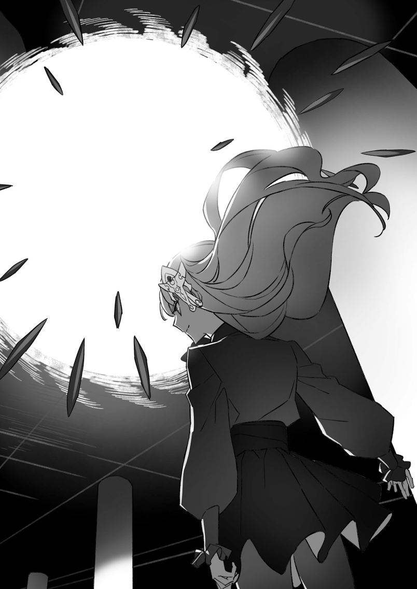
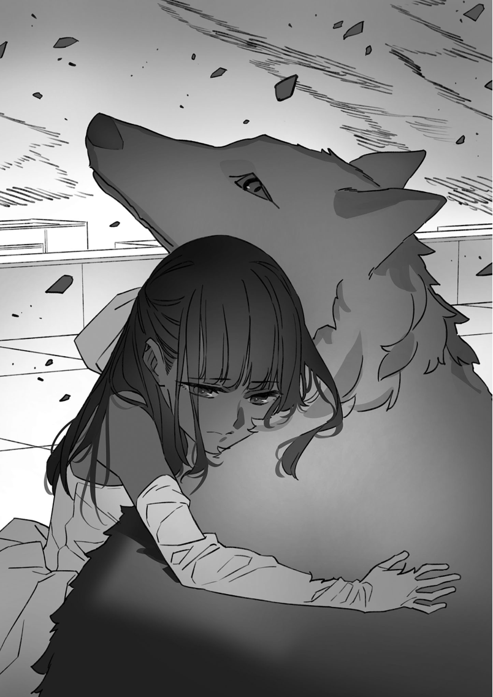
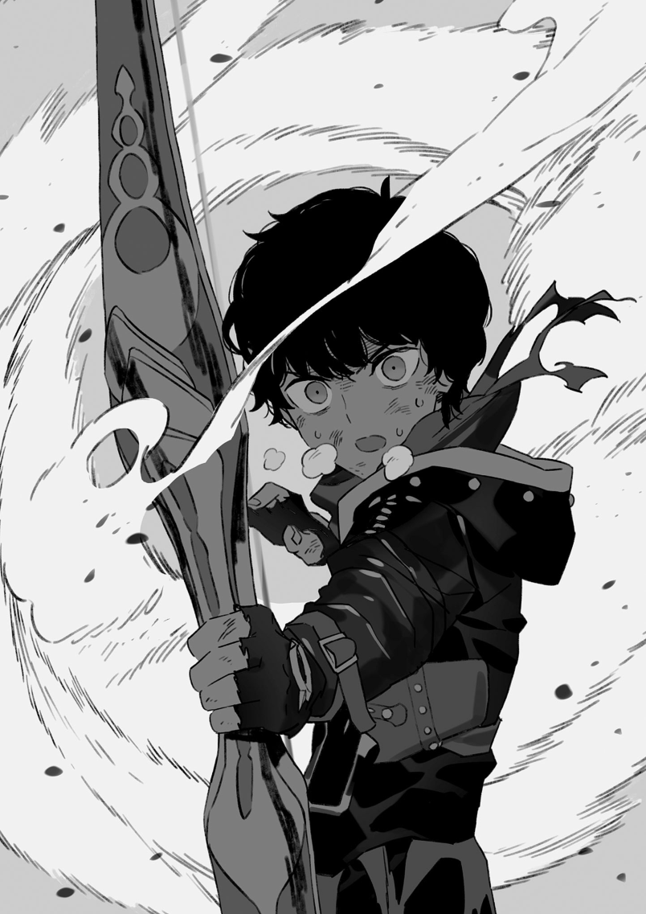

"A Era dos Deuses e a Era Moderna <Maturação>"
"Tenho tanta inveja."
Foi isso que uma garota disse a Enkidu muito tempo atrás.
Ela disse invejar o fato de Enkidu ser eternamente imutável.
Enkidu não conseguia entender aquela lógica na época, já que eram um boneco de barro que mudava de forma a cada movimento.
O que a garota queria dizer, porém, era que mudanças na aparência nunca faziam Enkidu deixar de ser Enkidu.
"Não importa o que aconteça, não importa quantas pessoas você conheça, mesmo que os deuses a condenem, sua essência continuará a mesma", disse ela.
Mesmo ao longo de sua morte lenta, mesmo depois do dia em que retornaram à terra, Enkidu permaneceu eternamente Enkidu.
Enquanto o mundo ainda tiver barro e pessoas, Enkidu continuará eternamente Enkidu, e a garota dizia invejar isso.
Uma garota que mudava aos poucos, uma garota amaldiçoada a mudar... em desafio ao próprio destino, ela fez um pedido a Enkidu.
"Não se esqueça de mim."
Foi só isso que ela disse.
Que não a esquecessem. Que não os esquecessem.
A garota temia que, em meio à sua mudança, acabasse esquecendo tudo. Temia isso mais do que a morte.
Foi por isso que fez seu pedido ao imutável Enkidu.
Ela queria que ao menos uma pessoa se lembrasse do que eles haviam sido.
Enkidu prometeu.
Antes mesmo de assumir forma humana, aprenderam o sistema das promessas e o incorporaram a suas operações fundamentais.
Enkidu de fato se lembrou das palavras da garota e da promessa que lhe fez.
Toda vez que se encontravam, a garota repetia a mesma pergunta, feliz e solitária ao mesmo tempo. "Você vai se lembrar de quem nós fomos?" Toda vez que isso acontecia, Enkidu sentia algo estranho.
Mas chegou o momento de se despedirem.
A vontade dos deuses separou Enkidu de sua primeira amiga e os enviou a Uruk, a cidade ao lado da floresta.
Mesmo ali, porém, Enkidu continuou ouvindo as palavras da garota.
Porque haviam feito uma promessa.
Todos os dias, Enkidu reproduzia aquelas palavras em seus sensores auditivos, tentando gravar os dados sobre ela em seu espaço de memória.
Mas, no dia da despedida...
As últimas palavras que Enkidu ouviu a garota dizer foram...
Quem é você?
Mais tarde, Enkidu viria a conhecer muitos humanos, começando por Shamhat, mudaria de forma, escaparia da mão dos deuses e viveria inúmeras aventuras.
Mas Enkidu jamais esqueceu as palavras da primeira garota humana que conheceram e os registros vivos daqueles que se uniam a ela.
Nem da cama e das refeições que compartilharam com Shamhat.
Nem de quando ela os enviou para conhecer um rei.
Nem dos três dias e três noites que passaram lutando contra ele.
Enkidu nunca esqueceu a garota e os que estavam com ela.
Nem quando corriam pelos campos de trigo de Uruk.
Nem quando desceram o rio Purattum numa jangada de junco.
Nem quando atravessaram a floresta de Eridu.
Nem quando Gilgamesh declarou que abriria caminho na Floresta de Cedros do Líbano.
Nem quando descobriram que a guarda da floresta era um grupo de crianças, entre elas a sua primeira amiga.
Nem quando confirmaram que quebrar a lei dos deuses e matar a guardiã os levaria a uma morte trágica.
Nem quando a enfrentaram.
Nem quando a derrotaram com as próprias mãos.
Nem mesmo quando a desmontaram com as próprias mãos até que a forma de sua antiga amiga desaparecesse para sempre...
Enkidu nunca esqueceu aquelas crianças.
As palavras delas são a única parte dos registros vagos do passado e das lembranças de Enkidu que ficou gravada em seu corpo e em sua alma.
Mas há uma coisa de que não conseguem se lembrar. Algo anterior à promessa.
A cor da flor que florescia quando a encontraram pela primeira vez.
O fato de não conseguirem se lembrar daquela cor era uma fonte constante de atrito no sistema de Enkidu.
Templo Neo-Ishtar, presente
"...Tenho uma pergunta para você, mas já vejo que vai ser difícil fazê-la antes de exterminar Ishtar."
As palavras, sutilmente pesarosas, de Enkidu vieram acompanhadas de uma sequência de ataques bloqueados pelas luzes da calamidade.
A torrente de energia brilhava de forma radiante, mas o que continha eram conceitos modernos de calamidade: doença, ondas de calor e guerra.
Berserker bloqueava tudo ao aplicar defensivamente Energia Mágica suficiente para destruir um quarteirão inteiro da cidade, se usada de forma ofensiva.
Aquilo era a escolha correta ao enfrentar a Arma Divina chamada Enkidu.
Mesmo com a Energia Mágica de Haruri sob o efeito das bênçãos da deusa Ishtar, lutar defensivamente era o melhor que podiam fazer.
O Selo de Comando usado pouco antes arrancara dela o máximo de seu poder como Colosso Guardião, mas não só o fato de ter falhado como guardiã estava gravado no mundo como ela também enfrentava justamente a pessoa que a derrotara nessa função, nas lendas.
A desvantagem de compatibilidade não podia ser maior e, ainda assim, ela conseguia resistir sem deixá-los passar ao templo. Isso porque aquele lugar não era a Floresta de Cedros do Líbano, e sim a entrada de um templo onde a deusa Ishtar estava consagrada.
Berserker circulava ao redor deles com uma agilidade impensável para o tamanho gigantesco de seu corpo, posicionando-se de modo que podia atacar Enkidu tanto pela frente quanto por trás, e continuava a suportar seus ataques.
Os turnos de ataque e defesa se repetiram incontáveis vezes.
Ambos haviam entrado nesse ciclo tático esperando que o conflito entre as serpentes venenosas do Avenger e o Touro dos Céus se resolvesse antes que algo mudasse ali. Mas então aconteceu.
Um desconforto indescritível assaltou o corpo de Enkidu.
"O que é isso?"
Uma sensação bizarra, diferente de tudo o que já haviam sentido em vida ou fora dela.
Algo que não existia até poucos instantes antes começou a brotar dentro do domínio expandido de sua Detecção de Presença.
Era diferente de um teletransporte por Selo de Comando. Era como se alguém passasse a "existir" ao negar o nexo que dizia que "não existia".
Mas o que mais surpreendeu Enkidu foi o local onde esse "algo" se manifestou.
No andar superior do templo, diretamente atrás da deusa espacial Ishtar, no espaço que ela manipulava.
Ao verificar Ishtar, Enkidu percebeu que ela notara o súbito aparecimento alguns segundos depois deles.
Conseguiam visualizá-la falando com alguma coisa atrás de si.
"Que surpresa. Eu não imaginava que houvesse alguém com habilidades de furtividade capaz de escapar ao meu radar."
Impressionados de verdade, concluíram que a entidade possuía uma Origem Espiritual de Assassin.
A existência da outra Origem Espiritual de Assassin já havia sido confirmada, mas esta era completamente diferente. Um Espírito Heroico de presença vaga, porém extraordinariamente pesada.
Apesar dessa qualidade espantosa de presença, ele permanecera perfeitamente oculto dentro do mundo até aquele momento.
Só esse fato já bastava para Enkidu imaginar o quão monstruosamente poderoso aquele Assassin devia ser.
De todo modo, era muito provável que aquilo alterasse o estado do tabuleiro.
Depois de analisar a situação, Enkidu usou o poder de Mudança de Forma para elevar suas capacidades.
Começaram a absorver mana aos poucos, de modo que o aumento em seus valores de Energia Mágica não fosse percebido de imediato.
Assim, estariam prontos para fazer o melhor movimento possível contra a deusa Ishtar assim que algo acontecesse.
Céus acima do Templo Neo-Ishtar
"O que... está acontecendo com eles...?"
Thia Escardos analisou o fluxo de Energia Mágica que observava e se assustou por um instante.
O fluxo de Energia Mágica ao redor do templo mudara drasticamente num único momento.
O gatilho fora uma sombra surgindo atrás da mulher homúnculo que distorcia o espaço com sua divindade.
Ela apareceu em silêncio, misturada às sombras do templo.
Era só isso que a sombra humanoide fizera, mas, para Thia, cujos olhos eram capazes de ver com precisão o fluxo da Energia Mágica, foi como se o mundo tivesse mudado de cor num piscar de olhos.
Era como se o dia tivesse virado noite num instante, e isso o deixou confuso.
"...Meu outro eu... Flat entenderia o que aconteceu aqui?"
O choque o fez sentir, por reflexo, falta da outra metade que perdera.
Depois de captar em silêncio o quadro geral do templo, Thia desviou o olhar para a garganta do desfiladeiro.
Ali, percebeu uma mudança no grupo de dezenas de figuras que antes se reunia no cânion.
A maioria havia sumido; restavam menos de dez.
"...Mesmo no meio de um conflito tão turbulento, vocês nem consideram fugir... sala de aula do El-Melloi."
Thia relembrou o lar que Flat Escardos tanto amava.
Após um instante de silêncio, girou os Satélites ao redor de si.
Thia criava Satélites de Energia Mágica que ficavam mais densos a cada rotação enquanto esperava o momento oportuno.
Para que pudesse reduzir tudo naquela terra a pó, se fosse necessário.
Andar superior do Templo Neo-Ishtar
"Quê!? ...Ishtar!"
Ao notar a anomalia atrás de si, Haruri tentou correr para defender Ishtar.
Mas Ishtar fez um gesto ordenando que parasse.
"Estou bem, Haruri. Continue fazendo Berserker manter aquela peça de sucata afastada. Basta uma abertura para eles invadirem aqui."
"S-sim, minha deusa!"
Haruri ainda se sentia insegura, mas não desobedeceu às palavras de Ishtar. Dedicou-se exclusivamente a alimentar Berserker com Energia Mágica.
Às suas costas, Ishtar fitava a escuridão mais profunda em seu templo.
Ela reconheceu de imediato que aquele "algo" era uma ameaça.
Mas, mesmo em perigo, Ishtar ainda era o próprio céu encarnado.
Ela enfrentou a massa de sombras mescladas do mundo, de máscara em forma de caveira, com postura digna e um sorriso ousado.
Mas ela ainda não liberara o encanto sobre o chão e o vento, pois a terra rosnante e o ar viscoso ainda seguravam o arpão suspenso no ar, impedindo-o de perfurá-la.
Também era possível que, uma vez encantado por Ishtar, algo realmente ganhasse vontade própria e continuasse lutando por si mesmo, sem que a deusa precisasse intervir de novo.
"Então... eu ouvi mesmo você falar 'badalar do sino'?", repetiu Ishtar, semicerrando os olhos. "Um guardião do desfiladeiro agindo como se fosse Ziusudra... Certo, entendi. Você é a sombra estendida dele."
As palavras dela ficaram mais ásperas, mas, por dentro, seu nível de cautela aumentava.
A cautela que sentia diante de Enkidu tinha natureza ofensiva, nascida de ódio e desprezo, mas aqui ela demonstrava a cautela em seu sentido mais verdadeiro: aquela tecida por uma hostilidade intensa, que tenta captar cada movimento do inimigo.
Ela sabia.
O guardião do Mausoléu do Desfiladeiro era capaz de implantar o conceito de morte num deus plenamente formado.
"Não pertenço à sua terra, então você acha que não pode me permitir me chamar de deusa? É isso?"
A pergunta da deusa Ishtar foi provocadora, fazendo a sombra cintilar em silêncio.
"Errado."
Ela sentiu todas as sombras daquele espaço tremeluzirem.
Talvez tivesse sido isso que de fato aconteceu.
"Apenas te respondi a razão pela qual me aventurei para fora do desfiladeiro."
Mais rápido do que ele terminava a frase...
Hassan formou uma sombra negra no ar, atrás da máscara em forma de caveira.
Setor noroeste de Snowfield, subterrâneo
Várias figuras humanas avançavam por uma caverna artificial escavada num tamanho uniforme.
Saber e Ayaka, assim como Rider e seus Mestres, caminhavam na escuridão sob a luz fraca de uma magia flutuando acima de suas cabeças.
"Eu nunca teria imaginado que eles tinham uma rede tão enorme de túneis subterrâneos...", comentou Saber, numa mistura de espanto e irritação. Rider concordou com um meneio de cabeça.
"Eu também me surpreendi. Em poucos dias, abriram caminhos sob a terra do cânion até o deserto ao sul."
"Bem, alguns graduados da nossa turma são especialistas em escavação e manipulação de linhas ley. Tivemos sorte de eles fazerem parte da equipe atual", disse Rin com naturalidade.
Ayaka então interferiu.
"Espera... vocês cavaram isto? Com as próprias mãos?"
"Se usar magia conta como fazer com as próprias mãos, então sim. Bem, a área ao redor do Graal Maior obviamente está protegida por Barreiras subterrâneas, então não pudemos cavar tudo exatamente do jeito que queríamos."
"Vocês descobriram onde fica o Graal Maior?"
"Bom, a resposta é muito mais óbvia do que era em Fuyuki. É como se eles nem estivessem tentando esconder", respondeu Rin, já começando a se irritar.
Sendo uma maga de Fuyuki, era bem provável que ela já tivesse participado de uma Guerra do Santo Graal antes. Pelo que aprendi com a ilusão que Prelati me mostrou, o Rei Arthur se manifestou em Fuyuki. Então não seria possível que essa maga, Tohsaka Rin, tenha visto o Rei Arthur com os próprios olhos?
Saber vinha curioso a respeito disso o tempo todo, mas, como Ayaka lhe dissera severamente para guardar essa conversa para depois, vinha se contendo.
Mesmo assim, o assunto surgiu por um ângulo inesperado.
"Você já se acostumou por completo com esse penteado, não é?", comentou o jovem chamado Caules.
Saber inclinou a cabeça.
"Hm? O penteado dela era diferente antes?"
A própria Rider respondeu à pergunta surgida em meio ao bate-papo durante a caminhada.
"Sim. Quando fui invocada, usava as roupas e o penteado que tinha em vida... Mas me disseram que meu cabelo chamava atenção demais quando eu andava pela cidade em forma física, então um Mestre o arrumou para mim."
"Ah... Bem, a lógica faz sentido. Eu também já usei alguns trajes modernos."
Depois de assentir, convencido, Saber soltou casualmente as palavras seguintes.
"Então é por isso que seu penteado se parece tanto com o do meu Rei Ancestral."
Rin interrompeu a caminhada e lançou um olhar fulminante a Saber.
Ignorando quem o fulminava com os olhos, Saber prosseguiu em seu raciocínio.
"Ah, eu já descobri o Verdadeiro Nome da srta. Rider. E, conhecendo a posição social dela, só consigo pensar em uma pessoa do mesmo nível usando esse mesmo penteado. Seria meu Rei Ancestral."
"Eu já vinha me perguntando... você tem alguma ligação com a Távola Redonda, não tem?"
"Se, no seu livro, ser fã já conta como ter ligação, então é claro que sim! Estar ligado ao Rei Ancestral Arthur... adoro o som disso! Obrigado!"
Vendo Saber transformar o que poderia ter sido uma boa chance de despistar o assunto em uma pista ainda maior sobre seu Verdadeiro Nome, Rin olhou para Ayaka com os olhos cheios de pena.
"O seu também dá trabalho..."
"Por favor, me diz que isso é... normal para Sabers numa Guerra do Santo Graal."
Ayaka implorou por uma confirmação, mas Rin não respondeu nem sim, nem não.
"Quando vi ele discursando em cima de um carro de polícia, achei que meus olhos ou minha cabeça estivessem com defeito."
"Eu imaginei..."
Tendo entendido na hora o que ela queria dizer, Ayaka soltou um grande suspiro.
Saber, por sua vez, se lembrou de uma coisa.
"Ah, é verdade... Eu ainda não paguei os reparos da casa de ópera. Preciso..."
Mas suas palavras foram interrompidas.
Um calafrio bizarro percorreu o ambiente.
"O que foi isso...?"
"Fiquem atentos", advertiu o jovem chamado Svin. "Os cheiros à nossa volta... começaram a se virar do avesso."
Ayaka não entendeu o que ele queria dizer com cheiros, mas entendeu que algo grave havia acontecido.
"Está vindo do... oeste", avisou Saber, estreitando os olhos para observar o entorno. "Sim, meu séquito de magos já suspeitava disso há algum tempo. Este espaço subterrâneo está sendo... invadido... Não, espere... engolido?"
Andar superior do Templo Neo-Ishtar
■■■■■■■■ começou a virar o mundo do avesso.
Aquilo era visivelmente diferente de uma fumaça negra comum ou de névoa.
A expansão de seu domínio no interior do templo lembrava menos um gás se espalhando e mais toda a luz ao redor sendo sugada para um ponto único.
A escuridão envolveu os arredores de Ishtar, e toda luz foi saqueada de sua visão.
Naquele espaço onde nem sequer se sentia o fluxo do vento tocando sua pele, uma lâmina sombria se aproximou das costas de Ishtar.
Mas... foi desviada sem dificuldade.
Uma parte da parede do Templo Neo-Ishtar, manipulada por Encanto, bloqueou a lâmina invisível sem exigir que Ishtar desse um único passo.
O som seco do golpe desviado foi engolido pela escuridão enquanto mais duas lâminas se aproximavam de direções completamente diferentes.
Mas também não a atingiram.
Sem sair do lugar, Ishtar bloqueou todas as direções com pedras e ornamentos levitados por seu Encanto.
As lâminas de escuridão libertadas por Assassin não possuíam terceira dimensão, o que normalmente as tornava capazes de atravessar um escudo de aço ou a blindagem de um tanque e alcançar a vida do alvo.
Um mago ou um Espírito Heroico com fortes defesas mágicas ainda seria capaz de detê-las, mas isso não surpreenderia ninguém acostumado a batalhas entre Espíritos Heroicos.
O problema era que a torrente de ataques sombrios não parava.
Às duas investidas simultâneas seguiram-se, de imediato, três lâminas invisíveis, visando o topo de sua cabeça, seus pés e suas costas.
Três sons de impacto foram produzidos, apenas para serem engolidos pela escuridão.
Antes que o som desaparecesse por completo, quatro cortes atingiram Ishtar.
Mas também não a tocaram.
Cinco cortes.
Seis estocadas.
Dez lâminas.
Doze.
Cem.
Mil.
Aquilo culminou num ciclo sem fim de impactos vindo de todas as direções, mas Ishtar não só encantou pedras e ornamentos. Ela também encantou o ar, e, por fim, até as próprias leis da física, fazendo com que o mundo eliminasse, do conjunto de possibilidades do destino, as lâminas que tocariam sua pele.
As lâminas de Assassin já teriam devolvido ao escuro a Origem Espiritual de um Espírito Heroico comum, mas a oponente era um fragmento de divindade deixado por uma deusa no mundo, ainda que apenas como uma mancha remanescente.
Nenhum Espírito Heroico isolado seria páreo para ela.
"Eu estava tão curiosa para ver o que você tentaria... e era só isso? Truques idiotas", declarou Ishtar à assassina na escuridão. "Você achou que esconder minha aparência e minha voz me impediria de encantar as coisas aqui? Não vai funcionar. O que faço nada tem a ver com os cinco sentidos. O mundo simplesmente está destinado a ser encantado pela minha presença."
Ishtar estendeu as mãos para afastar a "sombra" que apagara cor e brilho do espaço enquanto expandia seu domínio.
"Tenha um pouco de respeito, Mariner of the Umbrage."
O poder das palavras dela começava a afetar as próprias leis da realidade.
"Isso teria funcionado contra praticamente qualquer Espírito Heroico comum por aí. Se era isso que você queria, poderia ter matado qualquer Mestre ou Servo antes mesmo que percebessem. Não tenho certeza quanto àquele Avenger, já que ele é mais resistente do que precisava ser, mas, como seu Mestre é humano, esse truque que você acabou de exibir seria mais do que suficiente para eliminá-lo."
Não importava o quanto a escuridão a envolvesse. O brilho ao redor da deusa apenas se intensificava.
Era quando se via acuada que a deusa do céu se tornava mais próxima de sua natureza essencial.
Ela pisaria naquela escuridão, pisaria naquele conceito de morte e pisaria no próprio destino que tentava arrastá-la ao submundo.
O chão deu à luz um céu azul, e o lugar inteiro se iluminou com o pálido fulgor da Estrela da Manhã.
E... uma sombra flutuava no centro de tudo aquilo.
"Está com uma pose e tanto, não está?"
Lá estava o Assassin de máscara em forma de caveira, com o corpo perfurado por incontáveis peças de lápis-lazúli moldadas em lâminas.
Com o Núcleo Espiritual atravessado, já não se sentia mais o pulso de um Espírito Heroico.
"Pelo visto, quem ouviu o badalar do sino foram seus ouvidos."
A sombra, por definição, não podia existir no interior da luz.
A cegueira máxima de Assassin retirava a luz do próprio mundo, não dos olhos, mas a deusa Ishtar a superara com sua Autoridade.
Ou pelo menos foi o que ela pensou.

A deusa o interpretara por completo de maneira errada.
A sombra expandida do assassino e o ciclo de incontáveis cortes não eram a essência do que aquele Assassin realmente era.
"...?"
A expressão desapareceu do rosto da deusa Ishtar.
Naquele instante, ela finalmente notou que algo não batia.
Sentia o Núcleo Espiritual de Assassin ser esmagado.
Mas não via sinal algum de sua Origem Espiritual ruindo.
Pelo contrário...
Seu rosto e sua aura divina passaram da dúvida a uma leve perturbação e, por fim, a uma irritação sufocante.
"Você... está tentando torcer o modo correto das coisas?"
"Errado."
A voz do Assassin sombrio ecoou.
A voz de um homem morto ecoou.
A voz de um homem cujo Núcleo Espiritual fora pulverizado, alguém que não deveria mais existir, sussurrou aos ouvidos de Ishtar.
Ishtar ouviu sussurros vindos de algum ponto distante do passado e, por causa dessa distância, a voz se repetiu inúmeras vezes em seus ouvidos.
"Por este meio, esta minha réplica gravada na memória encerra a jornada transitória de um Servo."
A lógica dizia que aquelas palavras estavam sendo ditas naquele instante, mas a sensação sugeria que tinham sido gravadas na antiguidade.
"...!"
"É hora de entregar este fragmento emprestado da sombra perene à fronteira entre a escuridão e a luz."
Com essas palavras, o cadáver de Assassin gerou uma quantidade tremenda de sombras.
As sombras se espalharam como uma explosão negra, voltaram a engolir a luz e tingiram o céu recém-formado dentro do templo de uma escuridão ainda mais profunda que a noite.
A técnica inumana suprimiu até as palavras de lei de uma deusa.
Um Servo de classe Assassin comum jamais seria capaz daquilo.
Mas o True Assassin era.
Um Fantasma Nobre de autossacrifício cuja primeira ativação exige ser induzida pela própria morte.
Ele não morre como consequência de usá-lo.
Ele sela o destino de outrem como consequência da sua própria morte.
A versão mais avançada da técnica de Hassan do Abismo Insondável de fundir-se às sombras...
O Fantasma Nobre que só pode ser usado quando ele funde sua Origem Espiritual ao conceito de morte presente em toda terra e toda era enfim se manifestou.
Sensibilidade Meditativa "Zabaniya"
Muito tempo atrás, viveu um ■■■■■.
Ele era uma lâmina destinada a satisfazer os desejos de um grupo completamente diferente, por natureza, daquele que no futuro viria a ser conhecido como a Ordem dos Assassinos. Em outras palavras, realizava os desejos de homens sem um pingo de fé. Esse ■■■■■, criado para ser uma "sombra", foi reconstruído como um ■■■■■■■■ por meio de magia, maldição, alquimia e ciência. Depois de ■■■■■ inúmeros ■■■■■■■■■■, a organização que o criou acabou por ■■■■■■■■■■■■■■-lo. As únicas pessoas que estenderam a mão ao ■■■■■ degradado a um ■■■■ foram um ■■■■■ bondoso e um ■■■■■ piedoso, de fé pura no ■■■ coração. Graças a eles, o ■■■■■ pôde... tudo... matou... não conseguiu salvar... salvar ■■■ não era a coisa certa a fazer... procurou ■■■.
E assim ele viajou até o desfiladeiro.
Buscava um mausoléu de que se dizia existir nas profundezas daquelas montanhas, o que regulava a fronteira entre o submundo e o mundo dos vivos.
A maior parte de seu passado se dissolveu no fundo daquele nada.
Os dados da Origem Espiritual que o mundo deveria registrar para esse Espírito Heroico se dispersaram junto com o seu passado.
Não é possível enganar a memória do planeta, mas o fato de o mundo poder detectá-lo não fazia diferença quando ninguém era capaz de percebê-lo.
Ninguém. Naturalmente, nem mesmo sua própria versão como Espírito Heroico.
Tudo o que restava dentro dele era seu ego semi-sistematizado e o ideal ao qual dedicara tudo de si à beira da morte.
"Tolo."
A jornada de sua vida terminou quando ele alcançou o Mausoléu e encontrou ali uma entidade superior.
"O que crês poder fazer com mãos talhadas em sombras que não lhes é permitido perecer? Achaste que expiar antes da hora adequada te traria salvação? Desejas vagar eternamente pela fronteira entre a luz e as trevas, ciente de que a resolução que carregas não te levará a parte alguma?"
A encarnação da morte era humana de carne, e, ainda assim, estava coberta por sombras tão profundas que pareciam conter o submundo inteiro em seu interior.
À primeira vista, o homem entendeu que se tornaria a sombra daquela entidade venerável para toda a eternidade.
Não foi uma decisão. Foi aceitação.
Ali ele encontrou resposta para todas as suas dúvidas: "Por que fui reconstruído como um ser de traços não humanos?" e "Por que continuo andando, se alguém sem motivo para viver também não tem motivo para temer a morte?"
Tornar-se a sombra daquele ser que acabara de contemplar bastava para dissipar todas as dúvidas que julgara levar para o túmulo.
Não houve soluço emocional nem medo diante da densa sombra da morte, apenas uma resolução simples.
Ali onde estava, havia apenas tranquilidade.
Descansou em paz sabendo que, embora jamais tivesse entendido para que nascera, enfim chegara ao lugar a que estava destinado.
"Se é assim... oferece o pescoço."
Palavras condenatórias, um lampejo prateado, e então o vento, afiado e cheio de misericórdia, atravessou seu pescoço.
A última sensação que teve em vida brilhou com muito mais intensidade do que qualquer coisa em suas memórias soterradas na sombra.
Era essa a lembrança mais nítida em sua Origem Espiritual quase toda afundada nas sombras.
Ele não precisava de mais nada.
Continuou a existir como uma maldição eternamente à espreita entre as sombras, e isso lhe bastava. Não poderia desejar razão melhor para ter atravessado uma jornada árdua e sem fim.
O caminho sem destino não era uma maldição, porque, ao fim daquela extensa estrada, ele conquistara uma bênção.
Talvez, nesse ponto, sua mentalidade já não fosse mais humana.
E, por fim... sua vida terminou ali, onde uma sombra foi gravada no mundo.
Em frente ao Templo Neo-Ishtar
"O que é isso?"
Enkidu percebeu o evento anormal que avançava dentro do templo.
Sua Detecção de Presença, agora fundida ao mundo, sentia com clareza a anomalia.
A presença que se revelara desapareceu de novo, mas a anomalia permaneceu.
Enkidu a sentia, ouvia e via a situação tornar-se mais estranha do que nunca.
A tal anomalia era o próprio desaparecimento do mundo.
Uma porção da divindade que preenchia o Templo Neo-Ishtar desaparecia como um furo na folha mordida por um inseto.
Além disso, a extensão dessa perda de presença continuava se ampliando, a caminho de apagar o mundo inteiro.
Cor, som, cheiro, Energia Mágica... vendo o ar divino dentro do templo ser engolido pela sombra, Enkidu parou por um momento.
Berserker fez o mesmo, virando por um instante seu corpo gigantesco para longe de Enkidu e disparando sua luz da calamidade para o interior do templo.
Uma radiância cor de arco-íris passou por cima da cabeça de Haruri e correu pelas laterais de Ishtar.
Mas, no instante em que tocou a escuridão lá dentro, desapareceu em silêncio. Sem explosão, sem onda de choque, sem sequer uma brisa.
"..."
Aquela era a chance perfeita para Enkidu atacar as costas expostas de Berserker, mas, em vez disso, canalizaram sua Energia Mágica para a corrente dourada gigantesca acima deles.
"Berserker!"
Haruri, observando a situação com atenção, emitiu uma ordem.
Sem as bênçãos que recebera, teria perdido a consciência quando a luz da calamidade passou sobre sua cabeça.
Mas, apesar de tudo, seu posto como suma sacerdotisa de Ishtar era oficial.
Ela não precisava duvidar do bem-estar da deusa.
Por meio da Bênção da Deusa, uma ligação muito além de um simples elo de Energia Mágica, Haruri sabia que Berserker não feriria a divindade.
Ela reprimiu o medo instintivo, sem saber se o fazia por causa da bênção protetora ou por crescimento pessoal, e dedicou-se ao dever compartilhado por ela e Berserker como fiéis de Ishtar.
"Você não precisa deter o Lancer nem o Assassin atrás de mim! O problema é aquela corrente! Tem algo estranho com ela!"
"Concordo. Muito bem observado", ecoou imediatamente atrás dela a voz de Ishtar.
"Mm! Minha deusa! Sou grata pelas suas amáveis pa..."
Ao se virar, Haruri engoliu em seco.
Tudo no corredor que levava ao interior do templo, exceto a própria deusa, perdera por completo luz e cor. O que restava era apenas um espaço aberto e negro como breu.
Ela não conseguia dizer se aquele negror era um salão ou uma parede. Era impossível visualizar o que havia lá dentro, já que o espaço não permitia que nenhuma luz voltasse para fora.
E não era só a luz. Ela não ouvia ecos nem sentia Energia Mágica alguma.
Haruri foi atingida pela convicção irracional de que, se desse um passo adiante, seu corpo desapareceria para sempre.
O domínio da sombra tentava tomar seu território, e Ishtar fazia tudo o que podia para contê-lo.
Por incrível que parecesse, o Fantasma Nobre daquele Assassin estava enfrentando um Espírito Divino em pé de igualdade.
"Sua avaliação estava correta. Aquela corrente e aquele arpão são a maior ameaça", disse Ishtar, tentando tranquilizar a atônita Haruri.
E, como se as sombras não fossem um problema, emitiu uma ordem sem relação nenhuma com elas.
"Aquela corrente e aquele arpão poderiam ter sido um Fantasma Nobre muito mais poderoso se a peça de sucata tivesse transformado o próprio corpo neles. E, no entanto, preferiu fincar o equipamento no topo de um prédio... Isso significa que a peça de sucata tem algum plano oculto. Não que eu espere algo esperto deles... Ah."
Foi só o que conseguiu dizer antes que as sombras se contorcessem explosivamente.
Todas as sombras do templo ganharam forma física e começaram a devorar a luz ao redor. Aquele nada consumidor de luz praticamente enviava uma mensagem: "Somos nós que nos opomos ao mundo governado por Ishtar".
Ishtar ergueu a mão enquanto as observava com olhos sérios.
De imediato, encantou o espaço ao redor. O ar e as paredes se torceram, e a escadaria acima dela começou a se abrir como pétalas macias de uma flor desabrochando.
"Eu volto logo depois de lidar com esse Assassin sem modos."
"Minha deusa?!"
As palavras de Ishtar eram absurdas, mas ela mantinha o sorriso destemido sob o olhar de sua adoradora.
"Ah, é verdade.
Nem eu sobreviveria ao toque dessas sombras, então tome cuidado, certo?"
"Quê..."
"As sombras já cercaram a floresta."
E assim as sombras começaram a devorar as luzes do mundo.
Os sinais de vida desapareceram da floresta ao redor do templo. O mundo foi manchado de escuridão e silêncio.
Sombras proliferaram por toda parte: na folhagem, atrás dos troncos, sob os borrifos dos córregos lamacentos, nas fendas da terra antes manipulada pelo Encanto de Ishtar.
As sombras se proclamavam a forma correta das coisas.
E, no entanto, inchadas pela cor da morte, não tiraram a vida de um único inseto agarrado às árvores.
Porque havia uma única entidade rejeitada pelas sombras naquela terra iluminada pelo céu azul.
Só a senhora do céu pretendia engolir a terra com sua falsa luz.
"Vamos dar uma volta, Maanna!", gritou Ishtar ao saltar para o céu pela abertura que abrira no teto.
Em resposta, todos os ornamentos de ouro e lápis-lazúli que compunham o templo estremeceram, flutuaram no ar e convergiram para ela.
Transformaram-se numa embarcação em forma de arco com duas curvas belíssimas, que ergueu Ishtar rumo aos céus.
Mas as sombras não a deixariam escapar.
Aglomerados de trevas, enlouquecidos em sua perseguição, surgiram de dentro do mundo para caçar a radiância que cegava toda a criação: Ishtar. Onde há luz, há sombra. Era isso que provavam.
Gêiseres negros a perseguiam de todas as direções. Ainda que se chamassem gêiseres, seus movimentos lembravam muito mais vermes negros devorando o céu.
O Encanto da deusa Ishtar controlava o espaço e o terreno ao redor, o fluxo do vento e a densidade da atmosfera, permitindo-lhe esquivar-se por um triz da revoada de sombras imunes a seu poder.
Graciosa, elegante, ousada.
Mas aquilo não poderia durar para sempre.
Originalmente, Maanna era uma Barca dos Céus destinada a voar pelo mundo. Mas, como a Era dos Deuses ainda não havia recomeçado por completo, só conseguia manter sua velocidade máxima nas áreas do templo e da floresta.
As sombras, por outro lado, se opunham ao novo mundo e existiam até nas bordas do mundo atual.
Era dolorosamente claro que, se a perseguição continuasse, Ishtar seria a primeira a ficar sem aura divina e sem Energia Mágica.
Mas isso só se aplica se Ishtar não revidar.
"Oooh, perfeito."
Ishtar viu as serpentes gigantes enroladas nas pernas de Gugalanna muito abaixo e estendeu a mão como uma criança pegando um graveto para brincar.
"Venha, Cita!"
Aquelas eram encarnações da Hidra, a serpente gigante de maldições lançada contra os que desafiam os deuses.
Mas quem imaginaria? A emanação de deusa, agora de posse de toda a sua Autoridade, era capaz de encantar a essência das serpentes e reconstruí-las como algo completamente diferente.
A aura moldada à imagem de serpentes venenosas se condensou, transformando-se em cobras menores enquanto todas as suas maldições se viravam do avesso.
Enquanto estendia a mão e se esquivava em Maanna, sete serpentes se enroscaram em seus dedos e se entrelaçaram para formar um instrumento ritual.
Uma maça de pedra criada à imagem de sete serpentes.
Com uma única mão, Ishtar brandiu uma arma de aparência claramente monstruosa.
"Engole essa!"
Antes mesmo de terminar a frase, Ishtar lançou Maanna alto aos céus.
Mais alto. Mais alto. Mirando Vênus no mar de estrelas.
E as sombras se estenderam em perseguição.
Verdade ou não, Ishtar havia declarado que aquelas sombras podiam matar deuses ao toque.
Como uma Torre de Babel, a coluna negra subiu cada vez mais, erguendo a mão para alcançar uma deusa.
A trajetória de Maanna lembrava uma montanha-russa cheia de curvas bruscas e loopings até girar cento e oitenta graus e mergulhar subitamente rumo à ponta daquela torre.
Ishtar, uma deusa, não podia permitir que uma torre alcançasse o domínio dos deuses.
Não. Não era isso.
Não se tratava dos deuses.
Ela precisava que todos soubessem que os céus eram seus, o domínio de Ishtar.
Para isso, simplesmente brandiu sua arma, valendo-se do impulso de Maanna.
Martelo de Guerra das Sete Cabeças, Cita
Um martelo de guerra à imagem de sete serpentes. A lenda diz que Ishtar nasceu empunhando esse martelo.
Ishtar carregou de aura divina aquele martelo conhecido por devastar seus inimigos sem sequer precisar ser brandido e o esmagou com toda a força contra o topo da torre de sombras.
Todos que olharam para aquela parte do céu no instante em que o impacto brilhou murmuraram a mesma coisa: "Estou vendo uma segunda Vênus".
Seu instante de radiância prosseguiu enquanto ela descia de volta ao chão com Maanna, esmagando as sombras com o martelo Cita.
Quando tornou a pousar sobre o templo, havia exercido força bastante para pulverizar as sombras junto com a Origem Espiritual de Assassin. Mas Ishtar havia se esquecido de uma coisa.
Aquilo não era uma Torre de Babel.
Não era o tipo de torre que qualquer Hassan-i Sabbah ergueria.
A torre de sombras fora criada pela própria luz de Ishtar e simbolizava a altura de sua arrogância.
Por isso, não é o brilho que pode apagá-la.
"...É, eu realmente não me dou bem com essas coisas de submundo!"
Em resposta às próprias palavras, a sombra esmagada se ergueu de novo, voltando sua atenção para a Besta Divina dos céus.
Para aniquilar completamente aquela sombra, ela teria de arrancar toda a força do templo.
E, para isso, precisaria riscar da lista todas as demais preocupações possíveis.
"Gugalanna", chamou Ishtar o Touro dos Céus, que protegia o templo do enxame de serpentes. "Vai destruir a fonte da corrente... enquanto eu seguro esse sujeito."
A ordem não era fruto de pressão alguma.
Soava tão casual quanto mandar um cachorro buscar uma bola.
Mas, saída da boca de uma deusa, ela se tornava uma nova lei do mundo.
Naquele momento, inúmeros sistemas de vigilância meteorológica dos Estados Unidos, inclusive os do governo, observavam os movimentos anormais do "Furacão Inanna", mas o que viram foi apagado dos registros poucos minutos depois.
E, ainda que aquilo tivesse permanecido registrado, é fácil imaginar que o público teria tomado aquilo por um vídeo editado de brincadeira.
Mesmo magos teriam dificuldade em acreditar.
O furacão que permanecera estranhamente imóvel durante algum tempo deu um passo para trás... de dois metros.
Inúmeras flechas se cravavam na perna da besta colossal.
Delas jorrava a aura de serpentes gigantes.
Por fora, era a miasma de lama negra. Por dentro, um veneno mortal que levara inúmeros heróis e monstros ao túmulo. Enrolaram-se na perna da Besta Divina, costuraram-na ao chão e tentaram apodrecer seu corpo junto com sua divindade.
Mas isso não era motivo para desobedecer à ordem de sua deusa.
O Touro dos Céus deu um enorme salto para trás, sem se importar em precisar arrancar parte da própria perna para fazê-lo.
Um único salto bastou para perfurar a terra e açoitar a floresta com vendavais tremendos.
A besta colossal se abaixou, assumindo a forma de um furacão enquanto puxava o ar profundamente, condensando em si o conceito de tempestade.
O sol brando e agradável sobre Snowfield fazia a tormenta de um segundo antes parecer apenas um sonho.
Mas os moradores trancados em casa jamais perceberam essa anomalia.
Em casos raríssimos, alguns tolos destemidos ainda observavam tudo pelas janelas. Esses se sentiram confusos com a mudança no tempo, mas ela não durou muito.
A visão fantástica de todo aquele ar instável sumindo de repente, como se todos os problemas tivessem sido resolvidos, durou só quatro segundos e meio.
Depois disso, a criatura expirou trovão e torrente condensados num só fluxo de morte.
Um tornado maciço se formou à boca da Besta Divina em velocidade inacreditável e mergulhou contra o topo do prédio mais alto de Snowfield.
Um anticiclone migratório havia expirado. Um fenômeno físico induzido pela força.
Se fosse disparado contra o chão, a cidade teria sido arrasada ali mesmo, sem necessidade de esperar o esquema dos mentores da guerra.
Mesmo só suas ondas de choque já teriam varrido a cidade e a floresta com ventos superiores aos de um furacão. Mas o que engolfou o topo do Crystal Hill foi o próprio sopro do furacão: uma lâmina de vácuo de 200m/s coberta por relâmpagos e gotas de chuva congeladas.
"Tch... Será que havia um lugar pior para eu ter sido mandada?"
Doris Lusendra, uma das Mestres de Hippolyte, que estava no telhado do prédio, percorreu o corpo inteiro com sua Energia Mágica, coberta de suor frio.
Em seguida, pegou o lobo prateado sentado ao lado do canhão-arpão e voltou o olhar para a floresta a oeste.
O lobo tentou resistir, mas parou assim que percebeu que Doris não nutria hostilidade.
"Não pensei que a Mestra que eu convidaria para uma aliança seria uma quimera, mas ainda assim não posso deixar um Mestre do nosso lado morrer."
Ela ainda não havia se recuperado da luta contra Rin, mas forçou a expansão dos caminhos de seus Circuitos Mágicos para acelerar sua magia de endurecimento.
"É... provavelmente eu não vou sobreviver a isso. Desculpa."
Ela cobriu o corpo inteiro do lobo com o próprio corpo, meio consciente de sua morte iminente... Foi então que o sopro de vento e relâmpago alcançou o telhado.
Aquilo era o poder total de uma Besta Divina.
Era a obra divina dos céus.
Um golpe insolente de punição celeste, ordenando a toda a criação que garantisse a vitória de Ishtar.
O evangelho perfeito para anunciar o retorno da Era dos Deuses sob o governo dela.
Mas... ainda havia uma pessoa resistindo à mudança dos tempos.
Um encantamento sem palavras ecoou, e logo quatro paredes de Energia Mágica cercaram o telhado.
"...Hh?!"
Doris viu uma garota.
Uma criança. Não havia outra forma de descrever a juventude ainda estampada nela.
Quando Doris visitara aquele lugar pela primeira vez, julgara impossível convencê-la a se juntar à luta.
Em parte por ser uma criança, mas principalmente porque ela usava toda a sua Energia Mágica para preservar o cadáver de seu Servo, impedindo sem parar que se desfizesse naturalmente em espíritrons.
Doris presumira que isso significava apenas que a garota era jovem demais para tomar decisões sozinha, então limitara-se a avisar que seus aliados se reuniriam na garganta setentrional do desfiladeiro e voltara para a companhia do lobo prateado.
Por isso, ao vê-la surgir, sua primeira impressão foi a de que o Espírito Heroico da menina enfim se desfizera em pó de espíritrons.
Tiné Chelc.
A garota, Mestra do Rei dos Heróis, havia sido a primeira derrotada nesta Guerra do Santo Graal. Havia uma luz forte em seus olhos, e isso fez Doris reconsiderar imediatamente tudo o que pensava sobre ela.
Ali estava uma maga solitária, desafiando uma deusa na floresta.
"Minha família... vive nesta terra..."
Seus doze irmãos e nove irmãs tinham sido enterrados, sacrificados àquela terra.
Tiné já se conformara com o fato de viver como a "extensão" de uma sequência de vidas amaldiçoadas a se oferecer à terra, mas isso não fazia desaparecer da memória o tempo que passara com sua família.
Suas irmãs se esforçavam, do jeito atrapalhado delas, para lhe ensinar o que pessoas normais faziam por diversão.
Seus irmãos faziam o possível para permitir que a caçula Tiné escapasse do destino que lhes coubera.
No meio da batalha, ela não tinha tempo para recordar conscientemente nada disso.
E, ainda assim, eram exatamente essas memórias que atravessavam sua mente enquanto gritava com raiva.
"Então eu não vou deixar ninguém tomar esta terra... este solo... minha família... de mim!"
Movida por uma cobiça pura e sem mistura, a garota lançou palavras que, vistas de fora, soariam absurdas.
"Nem mesmo uma deusa!"
Crianças deviam agir como crianças.
Que ironia. Agora mesmo eu pareço uma criança fazendo birra.
Aquela terra pertencia ao planeta, e os humanos haviam decidido unilateralmente defendê-la por mera conveniência própria.
Quando o rei Gilgamesh disse que todas as terras um dia voltariam a ser o seu quintal, aquilo era apenas a arrogância do rei ou sua visão séria como árbitro entre o homem e o planeta? Tiné já não conseguia dizer. Mas havia uma coisa que desejava.
Agora ela se opunha a uma deusa por vontade própria, por sua raiva egoísta e arrogante, e não pela missão do clã guardião da terra.
A magia daquela criança ainda não amadurecida ergueu sólidas muralhas de Energia Mágica cobrindo o topo do edifício.
Uma barreira defensiva capaz de suportar um impacto forte o bastante para fazer o prédio desabar.
Aquele volume imenso de Energia Mágica não vinha apenas dos Circuitos Mágicos dela, mas também do poder que fluía das veias do dragão.
Ainda assim, era energia demais para uma única maga. A terra não conseguia repor sua Energia Mágica rápido o bastante. As muralhas perderiam potência em poucos segundos.
Vendo o Touro dos Céus não diminuir o ímpeto, ela imaginou que só adiasse o inevitável. Mas então ouviu o uivo alto e melodioso do lobo prateado.
Um dos Selos de Comando gravados no corpo do lobo brilhou em vermelho com aquele uivo, gerando uma imensa torrente de Energia Mágica.
"!"
Depois de evitar a onda de choque do sopro do Touro dos Céus, Enkidu pousou sobre o arpão flutuante capturado pela terra viva e sentiu a ativação do Selo de Comando do lobo prateado através do caminho de Energia Mágica.
Mas aquilo não teve efeito algum em sua Origem Espiritual.
Pelo contrário: Enkidu sentiu aquela torrente de Energia Mágica atravessá-los e voltar na direção da cidade.
Deve ter sido um Selo de Comando ativado por instinto, mas... para quê?
Com meros milissegundos de análise, Enkidu entendeu o motivo de seu Mestre e voltou-se depressa para a cidade, dizendo algo que ninguém ouviria.
"Obrigado. Sou sinceramente grato por ter você como meu Mestre."
"!"
Tiné sentiu uma grande onda de Energia Mágica fluir para dentro de si junto com o clarão do Selo de Comando do lobo.
Usou o poder do Selo de Comando... em mim?
Uma ação impensável numa Guerra do Santo Graal.
Selos de Comando deveriam ser usados no próprio Servo.
Não servem para fortalecer outros Mestres, já que não existe entre eles um elo direto de Energia Mágica.
Mas Tiné se lembrou de que, naquele momento, era uma exceção.
Ela vinha gastando sem parar sua Energia Mágica para impedir que o cadáver de Gilgamesh ruísse.
E, para impedir que o próprio corpo dela ruísse junto, Enkidu a havia conectado temporariamente ao próprio caminho de Energia Mágica por intermédio do lobo.
Pensando nisso em retrospecto, o simples fato de Enkidu ter feito aquilo ao apenas tocar sua mão em seu ombro já era absurdo, tanto na ideia quanto na execução. Mas, graças a isso, o lobo prateado conseguiu fazer a energia do Selo de Comando atravessar Enkidu e ser injetada em Tiné.
O poder de um Selo de Comando é capaz até de teletransporte, algo quase no território da Magia.
Aquela energia expandiu de imediato os Circuitos Mágicos dentro do corpo de Tiné, reconstruindo-os numa rede mais robusta para que seu corpo não desmoronasse por causa da fusão com a terra.
O resultado foi que as muralhas se expandiram enormemente e dispersaram por completo no ar o ciclone de água suja e trovoadas que se aproximava.
Três segundos depois, as muralhas desapareceram praticamente ao mesmo tempo que o ataque de sopro.
Nem mesmo o poder de um Selo de Comando poderia manter por mais do que alguns segundos barreiras capazes de suportar o golpe de uma deusa.
"Obrigada..."
Confirmando que sobrevivera por um fio, Tiné hesitou, mas agradeceu ao lobo que a observava ao seu lado.
"..."
O lobo parecia querer dizer alguma coisa.
Algo a respeito daquele a quem Tiné tentava proteger.
Em seus olhos havia preocupação pelo seu "Servo", deitado no último andar do edifício.
Entendendo o que o animal queria dizer, Tiné se agachou ao lado dele e o abraçou com força.
"Eu fiz tudo o que podia...
Não foi por falta de tentativa."
Lembrando-se do que fizera minutos antes, Tiné estreitou os olhos, tremendo de ansiedade, e murmurou algo que soava como uma confissão de pecado.
"Foi uma aposta... e agora o destino dele está nas mãos da terra."

Ao lado do Templo Neo-Ishtar
O Touro dos Céus viu seu sopro ser bloqueado.
Sua reação não foi confusão, e sim pura raiva.
Gugalanna fora chamado a esse mundo de arcano decadente.
Incapaz de perceber a presença de qualquer outro deus sumério na Terra, sua lealdade à Senhora dos Céus se tornara sua única alegria e sua única razão para viver.
E, no entanto, falhara em cumprir a ordem dela.
O rancor que sentia por Enkidu, a ferramenta de barro que outrora insultara um deus e o destruíra, não valia absolutamente nada diante de uma ordem direta de Ishtar.
Por isso o Touro dos Céus tremia de fúria.
Estava furioso consigo mesmo por não ter executado a ordem de Ishtar.
A besta olhou para o céu e soltou um rugido de ira.
O rugido assumiu muitas formas ao alcançar o outro lado do planeta, sendo ouvido no Leste Asiático como um trovão inexplicável e apavorando pessoas na Europa como um som apocalíptico.
E, em Snowfield, a terra sob os pés da besta divina, o rugido se manifestou como centenas de relâmpagos e ventos uivantes.
Mais de dez mil raios caíram no espaço de dez segundos, fazendo a maioria dos que observavam pelas janelas perder a consciência e destruindo todos os celulares e dispositivos de gravação que não tivessem a bênção da magia.
Em seguida, o Touro dos Céus começou a inspirar profundamente.
Desta vez, não verteu para o ataque apenas os furacões ao seu redor, mas também a divindade que o compunha, preparando um sopro muitas vezes mais poderoso que o anterior.
A besta divina sabia que Ishtar amava indiscriminadamente os seres humanos.
Por isso tentara minimizar vítimas humanas ao cumprir sua ordem.
Mas já não precisava desse tipo de contenção.
Era o conceito vivo da destruição, uma entidade selada pelos deuses que defendiam as terras acádias e libertada a pedido gentil — ou melhor, por ameaças gentis — da deusa Ishtar.
O Touro ofereceu tudo o que o compunha a um ataque contínuo, disposto a se sacrificar se fosse preciso para destruir os inimigos. Converteu todo o próprio ser na rajada de vento que soprava e depois o reconstituía no ponto alcançado pelo vento, simulando um movimento de velocidade extrema. Se fosse um Espírito Heroico, esse feito seria seu Fantasma Nobre.
Em termos simples, era uma investida a 396m/s com toda a massa e energia de um furacão.
Um ataque de sopro que ao mesmo tempo era um choque frontal de besta divina.
O furacão se movia a velocidades rivais das correntes de ar da estratosfera de Júpiter.
Sua materialização teria consequências irreversíveis em toda a Terra.
Exceto no templo divino de Ishtar.
Qualquer ato do Touro dos Céus estava preso às regras estabelecidas pela deusa. Nenhum de seus ataques feriria Ishtar ou seu templo.
E, por a besta divina saber disso instintivamente...
O executor da vontade dos deuses sistematizou por completo a si mesmo como agente da destruição, disposto a entregar a própria existência se fosse isso que bastasse para eliminar os inimigos.
Puxou o ar profundamente, condensou a divindade nos pulmões e então...
"Aqui é o ponto em que Flat teria dito alguma coisa."
O Touro dos Céus ouviu, acima de sua cabeça, a voz de alguém que julgava pequeno.
"Seu golpe tem start-up demais."
E, com esse aviso despreocupado...
Thia Escardos lançou alguns dos Satélites do tamanho de bolas de boliche que orbitavam ao seu redor, fazendo-os cavalgar o vento puxado pela inspiração de Gugalanna até atingirem seu ventre.
E aquilo deu início a uma cadeia de ruína.
Ou talvez... a corrente já tivesse começado antes.
Antes mesmo do primeiro sopro de Gugalanna.
No instante em que um Assassin garantiu o sucesso do assassinato de Ishtar.
Perto do Templo Neo-Ishtar
As sombras já haviam infiltrado o solo sob a floresta. Ironicamente, os primeiros a perceber isso foram os grupos de Rider e Saber, os que estavam mais fundo no subsolo do que a enxurrada lamacenta. E o vampiro levado por essa mesma enxurrada.
A sombra imensa criada por Hassan do Abismo Insondável estava sendo contida para não se expandir ainda mais.
Mas sombras não podem ser apagadas do mundo enquanto houver luz e objetos a obstruí-la.
A sombra indetectável continuava a invadir todo lugar que não recebesse luz. As brechas entre os blocos de pedra que compunham o templo. O interior das folhas das árvores. O interior dos corpos humanos.
Uma escuridão tão negra quanto a lama da inundação, mas de natureza diferente, uma massa de nada, sem Energia Mágica tangível nem maldição, se contorcia pela floresta.
"Não..."
Um arrepio percorreu a espinha de Haruri ao ver aquilo.
O mar de sombras evidentemente não pertencia àquele lugar, e, ainda assim, ela não conseguia sentir nenhuma Energia Mágica.
Escondendo-se na inundação escura, a coisa infiltrava a floresta ao redor do templo.
A deusa não está deixando que me atinja diretamente.
Mas o ataque contra ela é tanto o objetivo principal dessa sombra quanto uma distração.
A Energia Mágica no martelo de Ishtar anulava visivelmente as sombras que a assaltavam.
Mas isso não adiantava.
A escuridão envolvia o mundo com uma camada de nada em velocidade alarmante.
As sombras se erguiam da inundação, recobriam as árvores da floresta e as recoloriam numa única imagem negra que tornava impossível distinguir distâncias.
A Era dos Deuses tentara renascer, apenas para acabar afogada nas sombras do planeta.
Centro Correcional Especial Colesman
"Eu não imaginei que ele tinha isso na Origem Espiritual. Bateu numa deusa com força, hein..."
O Espírito Heroico que Faldeus soltara sem expectativas concretas recorrera a algum tipo de poder. Faldeus conseguia sentir isso através do caminho de Energia Mágica entre os dois, e as imagens de observação lhe permitiam captar o estado da área do templo.
O núcleo de sua Origem Espiritual fora destruído.
Contraditoriamente, ele continuava existindo mesmo assim.
Faldeus tinha certeza de que aquele era o poder do Fantasma Nobre ocultado de seu Mestre.
O poder desse Fantasma Nobre acabara por colocá-lo em igualdade de condições com a divindade do templo.
"Que surpresa. Assassins costumam ter Origens Espirituais fracas..."
Em meio a suas reflexões desapaixonadas, Faldeus ergueu a mão marcada por Selos de Comando.
"Você foi um trunfo formidável e uma ameaça. Não vou correr risco nenhum."
E se o poder de um Fantasma Nobre permitisse que um Espírito Heroico continuasse manifestado para sempre mesmo depois de ter o Núcleo Espiritual destruído?
Para um mago e conhecedor da mecânica de uma Guerra do Santo Graal, era uma possibilidade improvável, mas não algo que ele pudesse se dar ao luxo de ignorar.
Com um único clarão em seus Selos de Comando, Faldeus ativou sua jogada de seguro contra o próprio Servo.
"Eu queria mesmo era preservar os três Selos de Comando, mas... bem, eis aqui um tributo à sua memória. Por meu Selo de Comando, eu ordeno: use tudo de si para levar à cova a calamidade da floresta ocidental."
O Selo de Comando certamente foi ativado, mas ele não sentiu o menor sinal de resistência ou rebelião contra a ordem.
"Aquilo realmente foi uma despedida, não foi, Assassin?"
Mesmo com o sorriso nervoso, Faldeus conseguiu se despedir de seu Servo sem arrependimentos.
"Eu achava que sempre tinha sido o mais cauteloso possível com você... mas, no fim das contas, até o último instante eu nunca dei a você todo o crédito que merecia."
Templo Neo-Ishtar
Com uma expansão explosiva de Energia Mágica, a forma do assassino, antes totalmente invisível aos olhos de Ishtar, emergiu outra vez.
Ao perceber isso, Ishtar falou com o Assassin fundido a inúmeras sombras.
"Que pena. No último instante, seu Mestre o trai."
O silêncio da sombra parecia sem fim, mas Ishtar prosseguiu, indiferente.
"Aquilo foi um Selo de Comando, certo? Recebeu a ordem de despejar toda a sua Origem Espiritual no seu Fantasma Nobre."
Sua voz e seu dar de ombros traziam pena, não escárnio.
"Está vendo como a humanidade precisa da minha liderança? Quando eu não tomo conta deles, eles sempre acabam cegos pela ganância e cometendo atos de estupidez."
Mesmo assim, ela não baixou a guarda nem por um instante e continuou reprimindo as sombras que jorravam apesar de sua Autoridade divina.
Sem responder, Hassan do Abismo Insondável continuou sustentando, no interior do templo, a máscara de caveira flutuante de onde todas as sombras proliferavam.
Sombras não falam com deusas.
A morte não responde a santos.
Não restava nada a ser dito.
Tudo já estava acabado.
Mas a deusa arrogante ainda não havia percebido isso.
Ainda não.
Templo Neo-Ishtar
Haruri vacilou por um instante diante dos incontáveis fragmentos de nada que brotavam da inundação. Ainda assim, mesmo agora, ela se lembrava de sua missão e comandou Berserker.
"Lancer está acima de nós, Berserker!"
Ela via Enkidu sobre o enorme arpão parado pela muralha criada por Berserker e pela terra entrelaçada controlada por Ishtar.
Enkidu juntava incontáveis correntes criadas por seu Fantasma Nobre, amarrava-as à ponta do arpão e o puxava, tentando forçá-lo para dentro do templo.
Seu objetivo podia ser considerado meio cumprido àquela altura.
As correntes permitiam que a divindade de Ishtar, isto é, a divindade mesopotâmica, fluísse do templo até o arpão.
"...!
Como se atreve?"
Haruri ficou chocada quando seus instintos lhe disseram que, se não fizesse algo, aquele Espírito Heroico se tornaria ainda mais forte e ao mesmo tempo colocaria Ishtar em desvantagem diante das sombras.
Se não usasse agora seu trunfo, aquele Servo alcançaria o domínio de Ishtar.
"Por meu Selo de Comando, eu ordeno!"
A suma sacerdotisa não vacilou.
Nenhuma vantagem é absoluta.
A essa altura, qualquer erro podia ser fatal. Ela sabia disso como maga, como alguém abençoada por Ishtar e como Mestra de Berserker.
Por isso gritou, sem medo de perder a própria vida se isso fosse necessário para cumprir sua missão.
"Esmague o inimigo da deusa Ishtar... esmague esse Lancer com toda a sua força!"
Sem entender o quão cruel essa ordem era para Berserker.
O interstício entre a era dos deuses e a era dos homens.
Snowfield lembrava intensamente o auge da civilização babilônica, ainda que as transformações de ambas seguissem sentidos opostos.
Por isso, a True Berserker oscilava entre os mundos do sonho e da realidade.
Era um sonho agradável, um pesadelo e uma recriação aparentemente perfeita do passado.
Ela fora engolida por uma inundação de Espíritos Enlouquecidos e já não lhe restava sanidade alguma, mas, dentro do sonho, ainda tinha lampejos de consciência.
Seus olhos viam o céu.
Sobre uma bela ponte dourada suspensa no ar, uma sombra estava de pé.
Era uma amiga que conhecia muito bem.
Numa forma diferente da que lembrava. Mas ainda assim estava claro para ela.
Sem dúvida nenhuma, era...
"En... ki... du..."
Enquanto pronunciava esse nome, a Energia Mágica do Selo de Comando fluiu para dentro de seu sonho.
"N... ão..."
O mundo virou de imediato para outra página. A consciência da garota foi afogada por uma massa de quase três mil "vozes" e empurrada para o fundo.
As inúmeras vozes, exceto a da garota, conheciam muito bem quem viam.
"É o inimigo de quem devemos nos vingar."
"N... ão é... i... sso..."
"É o inimigo odiado que nos matou."
"É o inimigo temido que não nos poupou."
"É o inimigo sem coração que não nos salvou."
"É o inimigo tolo que tentou nos salvar."
"Enkidu é..."
"É culpa deles", "é culpa deles", "de termos acabado em nada", "de não podermos ser humanas", "de não podermos ser úteis aos deuses", "de não podermos proteger o jardim da deusa", "de nem sequer nos deixarem ser monstros de verdade".
"Eles não são... nossos..."
"Temos de matá-los."
"É o que a Mestra quer."
"É o que a deusa quer."
"É o que os deuses querem."
"É o que as pessoas querem."
"É o que o mundo quer."
"É o que a floresta quer."
"É o que eu quero."
"É o que eu quero também."
"É o que as crianças querem."
"É o que todo mundo quer."
" "
"Dê-lhes a morte."
"Dê-lhes destruição."
"Destrua essa pessoa aterradora."
"Mate esse boneco de barro repulsivo."
"Faça-o sofrer sem sentido, sem misericórdia e sem motivo até que não sobre nada."
"- - - - - - - - - - - - - - - - - - - - - - - - - - - - - - - - - - - - - -"
O rugido de Berserker ecoou ao redor do templo.
Diferentemente do Touro dos Céus, o dela não bastava para fazer o mundo inteiro tremer. Mas atingiu Enkidu com uma insanidade e uma sede de sangue intensamente condensadas, feitas da vontade de muitos.
"...!"
Durante o grito, o anel nas costas de Berserker brilhou, derramando sete cores de luz sobre Enkidu.
Depois de se esquivar por um fio, Enkidu tentou usar o embalo para saltar de árvore em árvore e fintá-la, mas Berserker, fortalecida pelo Selo de Comando, não permitiu.
A luz da calamidade irradiou em todas as direções, obliterando as árvores ao redor. O dano não alcançava o templo, mas a guardiã sabia exatamente o que fazia.
Não pretendia permitir que Enkidu chegasse à zona segura.
As sete luzes coloridas perseguiam a Arma Divina, que saltava pela floresta deixando um rastro dourado atrás de si.
Os feixes de calamidade restringiam a mobilidade de Enkidu.
Um criava tornados de fogo, enquanto outro levantava muralhas de gelo por meio de ondas de frio, e assim por diante.
Quando Enkidu destruiu uma estalactite de gelo que surgiu à sua frente, percebeu que o gelo continha outra calamidade em seu interior: doença.
Enkidu sabia que essa lhes era fatal, então desviaram toda a força para mudar de trajetória, mas...
Era exatamente como a guardiã previra.
Ela já estava em posição de desferir um golpe totalmente carregado. As ondas de choque liberadas pela parte que podia ser chamada de seu braço direito atingiram em cheio o corpo de Enkidu.
Eles colidiram com a muralha de terra erguida pelo Encanto de Ishtar, derrubando várias árvores da floresta no caminho.
Por ser a guardiã daquela floresta, ela antes escolhera não tomar nenhuma ação que ferisse as árvores que sobreviveram à inundação de lama.
Mas tais restrições haviam sido removidas pelo segundo Selo de Comando.
Enkidu sofrera dano, mas estava longe de perecer. Berserker sabia disso, e por isso ergueu o punho esquerdo, sem misericórdia nem hesitação, para transformar Enkidu de volta num monte de barro.
Foi então, quando menos esperava, que uma sombra surgiu diante dela.
Raving Shadow Flash
"Zabaniya"
Disparos velozes de cabelos negros se agarraram aos membros gigantescos de Berserker.
"É você..."
A Assassin sem nome, escondida dentro daquele mar de cabelos, respondeu às palavras de Enkidu sem expressão alguma no rosto, mas com uma vontade firme em seus olhos.
"Até onde eu sei... minha aliança com vocês três ainda está de pé."
"Você..."
Antes que Enkidu pudesse responder...
A terra em um canto da floresta se ergueu e explodiu como um vulcão em erupção.
E então... uma figura luminosa saltou do clarão, correndo sobre as águas negras em velocidade absurda para golpear o corpo colossal de Berserker.
Um golpe acompanhado por um clarão.
O corte atravessou a pele de Berserker, mais dura que aço e protegida por múltiplas camadas de bênção divina, e continuou seu percurso até os céus.
O dano estava longe de ser fatal, mas foi suficiente para desequilibrá-la e sacudir o chão da floresta.
Ao mesmo tempo, a Assassin sem nome soltou as amarras de cabelo, fazendo a gigante tombar contra o tronco de uma árvore meio submersa.
Então o homem que desferira o golpe pousou sobre uma rocha que despontava da inundação e sorriu.
"Isso mesmo... somos aliados", disse Saber a Enkidu, equilibrando nos ombros os restos de uma espada ornamentada que aparentemente se partira com aquele corte. "Claro que eu viria correndo no seu momento de necessidade. Afinal, fui eu quem propôs a aliança."
E, então, com o sorriso inocente de um garoto, proclamou sem qualquer malícia:
"Mas, para ser sincero, eu quase tinha esquecido disso!"
Menos de um minuto antes, nos céus acima do oeste de Snowfield
"Você não precisa me devolver o que engoliu antes", disse Thia Escardos em voz baixa e sem emoção ao furacão gigante.
Em sua batalha orbital contra Lancer, ele havia disparado uma magia capaz de aniquilar Los Angeles.
O Touro dos Céus absorvera um daqueles Satélites e assimilara a Energia Mágica contida nele.
Pouco antes, Thia ativara sem hesitar outros Satélites carregados de magia.
Oco boato / O esquecimento torna-se festa
"A Clockwork Abbadon"
Naquele instante, uma parte do mundo parou de se mover.
Não se tratava de uma parada no tempo, mas de imobilidade física.
A magia de Thia acelera e desacelera objetos, feitiços e até conceitos, se ele se esforçar o suficiente. Com o poder de Satélites carregados de um feitiço que aproximava o movimento atômico o máximo possível de um estado de repouso, ele começou a congelar diretamente o coração do Touro dos Céus, isto é, a fonte de calor que produzia as tempestades e nuvens de trovão sem conta: o Olho do Furacão.
A ideia de reduzir a velocidade de um furacão despejando gelo seco sobre ele é conhecida na comunidade científica, mas os cálculos indicam que seria preciso lançar com precisão algo como uma dúzia de jatos jumbo lotados só para desacelerá-lo alguns metros por segundo.
Mas o feitiço supremo de Thia fora capaz de varrer quase todo o gelo do Polo Norte. Dedicá-lo inteiramente ao congelamento teve um efeito rápido e imenso sobre o Touro dos Céus.
A energia dentro de Gugalanna desacelerou, rangeu, congelou e parou.
As gotas de água carregadas pelos vendavais nem chegaram a se transformar em neve antes de congelarem por completo.
Ali começava a construção da maior escultura de gelo do mundo, na forma de um furacão.
Num espetáculo assombroso, o furacão que crescera o bastante para engolir Nevada inteira era fixado em posição pedaço por pedaço por um único ataque mágico.
Essa mudança de temperatura bastaria para dissipar um furacão comum. Em qualquer outra situação, teria consequências sérias para o clima das regiões vizinhas.
Gugalanna, no entanto, era uma besta divina.
O domínio físico dos deuses encarnado na forma dos céus em fúria.
Seja onda de frio ou de calor, qualquer produto das leis da terra deveria ser negado, submetido e esmagado pelas leis da besta e pelas leis dos deuses.
O touro só tinha permissão para habitar os céus porque era capaz disso.
Não precisava de lógica nem de motivo. Porque os produtos da Autoridade da deusa são tudo. As leis vêm depois.
Centenas, milhares, milhões de raios iluminaram o céu, e o mundo rugiu com estrondos que só se ouviriam no momento da criação ou no fim dos tempos.
Ele converteu toda a Energia Mágica cultivada dentro de si em relâmpago, enquanto absorvia ainda mais mana do ambiente, fazendo brilhar toda a espiral de cumulonimbus que o cercava.
O vórtice de luz elétrica, comprimido numa extensão de quinhentos quilômetros, lembrava de forma impressionante a armadura dourada do Touro dos Céus.
"Seu monstro...", disse Thia, irritado, enquanto aumentava a rotação dos Satélites ao seu redor.
A magia preparada começou a revestir os Satélites com um brilho azul-claro...
Aquele feitiço transformaria Snowfield numa terra estéril pelos próximos dez mil anos, mas, quando Thia estava prestes a lançá-lo dos céus, uma torrente violenta de energia passou abaixo dele.
"Então você usa um poder divino... para se vestir de trovão?"
Era um avenger empunhando um arco tão alto quanto o próprio corpo.
"Foi o deus do mar que o obrigou a vestir a pele do Touro de Creta?"
Observando de cima, Thia percebeu que aquele era o Servo que antes vinha disparando flechas-serpente envenenadas.
Ele chegou até aqui em tão poucos segundos?
Aquela velocidade era anormal até para os padrões de Thia.
O corpo do avenger já não era inteiramente humano.
Sua figura ainda parecia humana, mas Thia tinha a capacidade de ver o que havia por dentro. Aos olhos dele, aquele indivíduo já havia se tornado algo incompreensível.
Sua carne se fundira à Origem Espiritual demoníaca roubada de Jack the Ripper, e sua divindade, lama, veneno e uma quantidade desproporcional de Energia Mágica mantinham entre si um equilíbrio miraculoso.
Era preciso ser algo acima de homem, herói ou deus para realizar aquele absurdo.
O que Thia via era um monstro prestes a abandonar a própria Origem Espiritual e romper para algo novo a fim de consumar sua vingança.
Palavras misturadas a maldições escapavam pelas frestas do tecido feito da pele do Leão de Neméia.
"Estou acostumado a conduzir touros."
Suas palavras soavam frias, mas havia nelas algo torcido. Alcides via o Touro dos Céus ou via a encarnação do trovão que governava os deuses?
"Nunca mais o seu trovão cortará as estrelas."
Sua próxima flecha não produziu Energia Mágica em forma de serpente como as anteriores.
Isso porque toda a Energia Mágica necessária para criar a Hidra transitória foi despejada no interior daquela flecha delgada.
Um estampido sônico sacudiu o ar.
Mas, quando o Touro percebeu o ataque, a ponta da flecha já lhe alcançara a perna.
A perna traseira direita, grossa como uma cidade pequena.
Seu joelho e as áreas ao redor desapareceram na fronteira entre terra e céu.
"Touro miserável, recipiente da fúria divina surgido do mar como oferenda aos deuses..."
Foi anticlimático.
Desapareceu como um balão d'água estourado por uma agulha.
No instante em que a ponta da flecha o atingiu, tudo contido em seu interior rejeitou o touro.
Carregada com a aura divina roubada da faixa de Ares, a ponta perfurou a superfície igualmente protegida por aura divina, e então a maldição, o veneno e a Energia Mágica guardados nela trabalharam juntos para destruir o boi sem interferirem uns nos outros.
"...Retorne ao barro de Creta como oferenda à humanidade."
O avenger, o demônio Alcides, agora estava a apenas um passo de sua forma completa.
Corroído por veneno e maldição, pagando com a vida e com a sanidade.
O antigo herói descia obstinadamente ainda mais fundo no poço espiralado, estreito e profundo.
Quando chegasse ao fundo, ninguém em Snowfield seria capaz de detê-lo.
Com uma única exceção:
A rainha com o poder de uma semideusa. A única com o direito de se vingar do avenger.
Andar superior do Templo Neo-Ishtar
"-!"
Haruri viu um Espírito Heroico montado num cavalo descomunal.
Era a Serva que saíra com Saber do enorme buraco no chão.
O fosso ao redor estava cercado por uma muralha alta de gelo criada pela magia de alguém, impedindo que a torrente negra que conquistara a floresta invadisse a área.
"Uma Rider...? Que presença esmagadora...!"
Os parâmetros do Espírito Heroico se desdobraram diante dos olhos da Mestra como um padrão de favo de mel.
Ao ver o poder da oponente, Haruri se colocou de imediato em guarda e se cercou de abelhas trajadas com armadura de lápis-lazúli.
A ferroada de uma abelha nada significaria para um Espírito Heroico.
Mas, como suma sacerdotisa de Ishtar, Haruri não tinha a opção de ficar parada apenas observando.
"Hng..."
Um enxame incontável de abelhas bloqueou o caminho de Hippolyte. Tendo deduzido na hora que eram familiares, ela olhou ao redor até pousar os olhos sobre a garota à entrada do andar superior.
"A sacerdotisa do templo...?"
Hippolyte virou o cavalo com habilidade e saltou de uma só vez até a área da entrada do templo.
"Suponho que seja a sacerdotisa que guarda este templo! Peço perdão pela afronta de visitar um santuário montada a cavalo! Rogo que compreenda as circunstâncias desta guerra!"
Hippolyte estivera em posição tanto como filha da suma sacerdotisa de Ártemis quanto como rainha e comandante guerreira que guardava seu templo.
Por isso, embora aquela deusa não fosse aquela a quem prestava culto, em vez de desrespeitosamente avançar sem aviso, optou por vocalizar seu pedido.
"Nada tenho contra a sua fé! Mas minha lealdade à minha Mestra não me permite assistir sem agir a um deus antigo brincar frivolamente com a sociedade humana e subjugar seu povo! Por isso, imploro que essa emanação divina retorne aos tempos antigos!"
Hippolyte declarou guerra contra a deusa com ousadia.
As abelhas controladas pela garota que parecia ser a sacerdotisa de Ishtar a cercaram...
Mas Hippolyte manifestou numa das mãos um machado colossal e o brandiu em sincronia com o giro do cavalo.
Um vendaval forte o bastante para repelir as rajadas do furacão lançou o enxame para longe, e a cavaleira montada declarou suas intenções à sacerdotisa.
"Como guerreira e como rainha, não desejo tirar vidas sem necessidade. Você vai me deixar passar para o interior do templo."
Tendo anunciado isso, Hippolyte segurou as rédeas do cavalo, pronta para atravessar mesmo que a sacerdotisa tentasse detê-la.
Havia uma máscara de caveira inquietante produzindo sombras no corredor que levava ao santuário interno, mas seu plano imediato era ignorá-la.
No instante em que tomou essa decisão, uma voz divina e arrogante reverberou do alto.
"Isso é blasfêmia, filha do deus ocidental da guerra."
"!"
"Ou devo chamá-la de... chefe guerreira do templo da deusa da lua?"
Hippolyte ergueu os olhos e viu uma deusa num navio flutuante, empunhando um martelo de guerra modelado a partir de sete serpentes.
"Você não foi invocada por Alaya para defender a humanidade, lembre-se. Você é apenas um Servo numa Guerra do Santo Graal. Quer me expulsar em nome da humanidade?
Convenhamos, não tem graça nenhuma."
Ela estava cercada por uma luz intensa. Não por um halo ofuscante, mas por um brilho transparente e sereno, tão apaziguador quanto contemplar o céu azul.
Seu porrete soltava uma torrente de energia, e a própria Ishtar emitia uma claridade brilhante.
A combinação dessas duas coisas a mantinha protegida das sombras infinitas que a atacavam de todas as direções.
Uma deusa. Mesmo antes desse confronto, Hippolyte já sabia que Ishtar era uma entidade um degrau acima dos Servos, apesar das limitações impostas pelo Graal Menor como receptáculo.
Ainda assim, Hippolyte não recuou um só passo. Sobre o cavalo, encarou a Senhora dos Céus acima dela e proclamou:
"A razão da minha invocação não importa! Meu corpo será sempre escudo para os oprimidos e meus braços serão a lâmina com que resistirão! Esse é o meu juramento à deusa da lua e a meu pai, o deus da guerra!"
Com essa declaração audaciosa, e pelas palavras da própria deusa, a sacerdotisa de Ishtar descobriu a identidade de Rider, deixando escapar:
"A rainha das... amazonas."
Enquanto Hippolyte argumentava em voz alta e de olhar duro, Ishtar fechou os olhos e suspirou.
"Francamente. Primeiro a peça de sucata, depois esse Assassin rancoroso, e agora você..."
Quando os olhos se abriram de novo, seu brilho era de um frio inacreditável ao liberar sua Autoridade de Encanto com força total.
"Vocês todos estão me subestimando um pouquinho demais."
Por um instante, pareceu que o chão ao redor do templo desmoronava. O que na verdade aconteceu foi que o enorme templo flutuou para o céu.
O enorme arpão permaneceu acorrentado em sua ponta, e a corrente dourada ligada ao lançador se ergueu, como uma ponte de corda ligando a cidade à fortaleza flutuante.
"O quê..."
Até Hippolyte se sobressaltou. Ela reajustou a postura do cavalo para não serem derrubados pelo templo em tremor.
"Vocês acharam que eu não tinha percebido os ratinhos se movendo no subterrâneo?"
Vários buracos se abriram no solo que antes sustentava o templo, revelando figuras humanas em movimento.
"Entendi. A base do plano era a ideia de que o templo estava me fortalecendo... Não está errada, mas, se acharam que destruir o templo bastaria para me matar... isso, sim, é blasfêmia."
Enquanto falava, Ishtar ergueu o martelo.
Ao mesmo tempo, carregava Energia Mágica naquele martelo de guerra de que a lenda diz ser capaz de trazer a morte aos inimigos sem que ela sequer precise brandi-lo.
"Mas admito, foi ousado usar o Servo deles como isca. Vou pulverizá-los porque preciso bani-los do meu mundo, mas são exatamente o tipo de humano de que eu gosto, sabe?"
Falando sinceramente sobre o quanto gostava deles, ela preparou-se para despejar a morte sobre os magos sob o templo.
"Kalion!"
O cavalo relinchou e saltou em resposta ao chamado de Rider.
Erguendo-se em meio à tempestade furiosa como se o próprio peso não importasse, atravessou os céus da floresta usando como plataformas as árvores voadoras e os fragmentos de chão suspensos.
"Avancem, Faixa de Guerra e Diamatheia!"
Hippolyte liberou o poder do seu Fantasma Nobre, a faixa de Ares, e trocou o machado por um arco.
A faixa transbordou de aura divina, imbuindo a flecha com uma Energia Mágica de cor distinta daquela que preenchia o templo.
A flecha disparada correu em linha reta até Ishtar e repeliu o golpe do martelo carregado com aura divina.
O disparo também varreu as barreiras erguidas por Ishtar.
"Quase", comentou Ishtar com um sorriso destemido à Hippolyte que caía. "Se esta era possuísse o domínio de Ártemis ou de Ares, você poderia ter me perfurado com esse tiro."
E então, quando se preparava para mirar em Hippolyte com o mesmo martelo Cita que usara para aparar a flecha...
Incontáveis maldições Gandr voaram do templo até ela.
"!"
Embora os fragmentos da maldição não fossem capazes de romper suas barreiras, eles atrapalharam sua visão, dando a Rider a oportunidade de pousar com o cavalo e se posicionar para proteger as pessoas dentro do templo.
Duas figuras apareceram no andar superior do templo.
Duas mulheres em trajes contrastantes, uma de vermelho, outra de azul. Era fácil ver que ambas eram magas experientes.
"Chegamos a tempo. Ainda que me irrite saber que as únicas que conseguiram alcançar o templo fomos você e eu."
Rin respondeu na lata à maga de azul, Luvia.
"Muito bem, hiena. Eu só estava seguindo seu rastro porque imaginei que uma saqueadora de túmulos conheceria os túneis certos."
"Quantas vezes vou ter de lhe dizer isto? Refira-se a mim como a Caçadora Mais Elegante do Mundo."
"Não consigo chamar de 'elegante' alguém que para para me corrigir numa hora dessas... Lá vai!"
Mesmo no meio da discussão, Rin gastou uma joia para disparar uma bala de energia.
Quase no mesmo instante, Luvia gastou uma grande quantidade de joias para erguer uma muralha e uma chuva de projéteis, limitando os movimentos da deusa no céu.
Uma sombra rondava as duas, mas não mostrava qualquer sinal de atacá-las, nem a Hippolyte.
"Mais importante: que sombra é essa?"
"Boa pergunta, mas ignora enquanto não estiver tentando nos matar! Não dá para reclamar de ganhar mais aliados!"
"É verdade. Depois de termos chegado até aqui, não devemos nos preocupar com trivialidades."
Apesar do que diziam, Rin e Luvia mantinham uma parcela da atenção voltada o tempo todo às sombras.
As duas eram magas, e qualquer mago perceberia que as sombras ao redor do templo estavam profundamente ligadas à morte e que esse conceito de morte não estava necessariamente sendo direcionado a elas.
É inofensivo para nós desde que não pisemos onde não devemos.
Essa foi a conclusão que as fez concentrar-se mais na deusa voadora.
"Ouvi dizer que você anda por aí se declarando a deusa Ishtar... meio vulgar da sua parte. Ainda que eu suponha que seja exatamente assim que ela é nos mitos."
Rin provocou de forma barata, mas... estranhamente, Ishtar simplesmente parou no ar e observou o rosto dela com atenção, com uma expressão de dúvida.
"? O quê? Tem alguma coisa no meu rosto?"
Rin ficou intrigada, já que esperava uma resposta imediata. A deusa parecia pensativa quando abriu a boca.
"Já nos encontramos antes? Não estou perguntando sobre este homúnculo que uso como receptáculo, mas sobre mim mesma."
"Hã? Eu? Encontrar uma deusa mesopotâmica? Não precisa brincar comigo, sua presença aqui já é piada suficiente. Se eu tivesse encontrado algum problema do seu tamanho, me lembraria."
Enquanto Rin só ficava mais confusa, Ishtar parecia ter chegado a uma conclusão.
"...Se essa inquietação existe apenas do meu lado, então minha ligação deve ser com uma outra versão sua... O que significa... que não tenho motivo nenhum para não me livrar de você."
Depois de alguns acenos de cabeça... a deusa desceu o martelo sem qualquer hesitação.
Ondas de choque imensas desabaram do céu, mas as flechas de Hippolyte neutralizaram o impacto no último segundo... e as sombras aproveitaram esse timing para sair do estado reduzido de atividade e irromper, inchando até cercar o templo inteiro enquanto atacavam Ishtar.
"Argh, vocês não vão parar nunca? Eu já destruí o Núcleo Espiritual dele. Quanto tempo ainda vai levar para desapare..."
No meio da frase, ela percebeu o que estava acontecendo, e sua expressão gelou.
Elevou Maanna ainda mais alto e voltou a fulminar o enxame de sombras à distância.
"Ah... entendi. Então era disso que se tratava."
Rider, Rin e Luvia se esconderam mais fundo no templo enquanto as sombras passavam a encobri-las da vista.
"Mestres, por que vocês apareceram? Se tinham chegado ao templo, então deviam ter..."
Foi Rin quem respondeu à pergunta de Rider a duas de suas Mestres.
"Desculpa, Rider. Sabemos que o plano era destruir o altar por dentro..."
Luvia, autointitulada a Caçadora Mais Elegante do Mundo, completou a frase com um dar de ombros.
"Mas você viu o altar deste templo? Não passava de uma coleção de gemas compradas em joalherias comuns de Snowfield. Não encontramos nada que pudesse ser chamado de catalisador ou de bom gosto artístico."
"Na ausência de Tesouros Sagrados adequados, o que está estabilizando a divindade nesta terra é aquela mulher, o Servo Berserker e aquele furacão idiota."
Com a explicação adicional de Rin, Hippolyte ergueu os olhos para o céu.
"...Então, para deter a alteração do mundo..."
"Eu até acho que explodir o templo inteiro desaceleraria a alteração e enfraqueceria um pouco a Autoridade dela... mas, para uma solução mais séria, temos de derrubar um desses três", afirmou Rin, com certeza. "Porta A: um furacão. Porta B: uma Berserker. Porta C: um homúnculo com maldição ou Espírito Divino ou seja lá o que for dentro dele. Que seleção esplêndida de prêmios. Dá vontade de chorar."
"Livrar-se da Mestra de Berserker seria deselegante, mas ainda assim uma opção, não?"
Rin, com toda sua experiência em Guerras do Santo Graal, balançou a cabeça diante da pergunta de Luvia.
"Pelo que vi... essa Mestra tem um caminho de Energia Mágica ligando deusa e sacerdotisa. Matar ou neutralizar a garota só faria os direitos de Mestra serem transferidos automaticamente para a tal deusa."
Ela parou um instante para pensar em Berserker.
"Um halo de arco-íris, a guardiã do domínio de Ishtar... Pelo que Mary observou da luta diante do hospital e pelo modo como ela fazia dupla com o Touro dos Céus, essa Berserker é Huwawa sem sombra de dúvida."
Huwawa.
A guardiã do jardim da deusa Ishtar, a Floresta de Cedros do Líbano. O monstro que aterrorizou Gilgamesh no épico mais antigo do mundo.
Mas acabou derrotada por Enkidu quando eles e Gilgamesh visitaram a floresta. Acredita-se que, após a morte, suas características monstruosas foram incorporadas ao mundo e depois se espalharam até as terras gregas, influenciando muitas monstruosidades, como a Górgona.
"Pedimos àquele Saber que segurasse Berserker... mas talvez tenhamos exigido demais dele."
Floresta ocidental
Saber se esquivou do braço direito de Berserker Huwawa, mas as violentas ondas de choque do golpe ainda assim o lançaram longe.
Quando perceberam, o movimento do Touro dos Céus já havia dissipado a inundação negra que cobria a terra, e metade das árvores derrotadas pelo veneno e pela miasma jazia derrubada.
Em qualquer outro lugar, as árvores teriam murchado, apodrecido e desaparecido, mas, presumivelmente, as bênçãos da deusa que se estendiam do templo à floresta as mantinham como estavam.
Depois de um pouso apertado numa árvore próxima, Saber olhou para cima e gritou:
"Que diabos! O templo está flutuando, Lancer! São os lendários Jardins Suspensos da Babilônia?"
"Absolutamente não. Aquele templo não atende aos padrões de qualidade nem de um jardim, muito menos da deusa ali venerada", respondeu Enkidu, tentando conter os membros de Huwawa com correntes douradas que avançavam de todas as direções.
"É assim que funciona? E o que são esses gêiseres de sombra? Eu sei que é a mesma coisa que estava recolorindo a área subterrânea..."
Sombras se erguiam por toda parte, desafiando a gravidade em sua ascensão. Alimentavam-se da luz para perseguir a deusa voadora.
"Aquelas são... as sombras do desfiladeiro", murmurou a Assassin sem nome.
Ela também participava do esforço de conter Berserker, combinando múltiplos Fantasmas Nobres para mantê-la sob controle.
"Um exaltado... usou o fio da própria vida como receptáculo para criar uma verdadeira entrada para o mundo inferior."
"Mundo inferior?"
As palavras da Assassin sem nome intrigaram Saber, mas, ao ver Berserker romper as correntes de Enkidu, ele preparou sua espada em vez de exigir mais explicações.
"Certo, então isso faria dessa Berserker gigantesca o Cérbero desse mundo inferior! Que empolgante poder abater tantos monstros numa só invocação!"
"Matar monstros? Isso me traz lembranças", correu Lancer ao lado de Saber.
Sua voz carregava um leve tom de tristeza, de autorrecriminação. "Eu me pergunto por quê... já que naquela floresta não havia monstros."
"..."
Saber já havia passado pelas costas de Berserker em velocidade sobre-humana, mas, ao ouvir isso, travou numa freada brusca, virou-se cento e oitenta graus e falou.
"Não sei quais são as suas razões... mas você não considera esta Serva um monstro, considera?"
Saber preparou seu Fantasma Nobre durante a conversa.
"Sim... Ela é humana... todas elas são..."
Saber carregou a espada com Energia Mágica ao fazer a pergunta, e Enkidu concentrou energia nos próprios membros ao responder.
"Foi graças a ela que aprendi o significado da vida... Ela é minha primeira amiga."
Repetiram isso para si mesmos, e sua determinação não vacilou.
Saber aprontou a espada. Para ele, ouvir Enkidu dizer "Ela é humana e minha amiga" a respeito daquele monstro gigante que os bombardeava com luz da calamidade já era resposta suficiente.
"Certo, desculpa por chamar sua amiga de monstro! Deixa eu reformular!"
Saber sorriu largo enquanto o brilho da Energia Mágica se concentrava na espada.
"Primeiro o douradão e agora esta... Como é emocionante poder conhecer todos os amigos incríveis que você tem!"
Palavras sem vergonha, mas também sem malícia.
"Uma oponente digna de ser derrotada! Assassin e eu vamos mantê-la aqui, então vá fazer o que quiser!"
"!"
Até ali, tudo levava Saber a entender que o objetivo de Lancer não era derrotar Berserker.
Mas ele não os criticaria por isso.
Chegara onde estava fazendo sempre o que queria, e acreditava que Lancer tinha a mesma liberdade de fazer o mesmo.
"Meu eu verdadeiro... não pertence a um lugar tão emocionante assim. Ele ainda deve estar queimando no purgatório, porque esse foi o meu maior desejo em vida. Então o que quero dizer é... esta versão de mim é uma duplicata ou uma farsa. Não importa qual dos dois. O único eu de quem gosto é este que está aqui."
Ele disse algo parecido com o que havia dito sobre Ayaka aos alunos da sala de aula do El-Melloi.
Ele se lembrava de uma guerra em que pessoas de lados opostos se uniram por um objetivo comum.
Fora uma experiência aborrecida, mas ao mesmo tempo emocionante.
O homem agora manifestado como Saber valorizava acima de tudo seus impulsos momentâneos e acreditava que eles valiam a própria vida.
Tinha ascendido a Espírito Heroico e lhe era permitido correr outra vez por um curto período. Tudo o que construíra em vida era em função de fazer seu coração estremecer naquele presente momentâneo.
As coisas seriam diferentes se fosse invocado sob outra Origem Espiritual. Era bem possível que, em outras formas, suas filosofias como rei se manifestassem mais fortemente, sobretudo em sua Origem Espiritual de Rider.
Mas, desta vez, fora invocado como cavaleiro e, poucos dias antes, encontrara seu objetivo para o Santo Graal.
Faria aliados e lutaria ao lado deles.
Fora isso, seguiria apenas o que seu coração mandasse.
Não era o tipo de homem que desejaria impedir seus aliados de fazer o que quisessem, e, mesmo que desejasse, jamais poria isso em prática.
"Nosso tempo é curto e nossas lembranças desaparecerão quando voltarmos ao Trono! Mas o registro de tudo isso ficará para sempre como uma página no livro de nossas vidas!"
Ele intensificou o brilho da espada, e essa radiância se refletiu sobre a terra encharcada.
Ao notar isso, Berserker deixou de atacar a Assassin sem nome, virou a metade superior do corpo para encará-lo e começou a acender seu halo.
"Se um dia, talvez depois do fim da humanidade e do próprio planeta, chegar o dia em que o meu eu verdadeiro seja autorizado a deixar o purgatório e possa ler esse 'livro'..."
Saber sorriu com alegria sincera, apesar da seriedade daquele conflito íntimo.
"O mínimo que eu posso fazer é escrever uma página da qual me orgulhe, não acha?"
E antes que Berserker tivesse a chance de disparar sua calamidade cor de arco-íris...
Sword of Ever-distant Victory
"EXCALIBUR!"
Um único brilho dominou a floresta, liberando sua luz em ressonância com a corrente dourada que cintilava no céu.
Sem suportar aquilo, a espada se esfarelou em pó... mas, em troca, o corte ascendente atravessou o corpo de Berserker e alcançou os céus, dispersando também a luz da calamidade.
O primeiro Excalibur que Enkidu havia visto fora o que ele brandira com um galho ao formar a aliança deles.
Obviamente, um galho e uma espada de verdade são tão diferentes quanto céu e terra, mas, deixando esse ponto de lado, Enkidu concluiu que o Fantasma Nobre que viam agora estava quase reconhecivelmente mais desenvolvido do que antes.
O Espírito Heroico que até então não tinha objetivo consciente na Guerra do Santo Graal encontrara seu desejo e oficializara o contrato com sua Mestra.
Enkidu não sabia dessa mudança, mas havia uma coisa de que tinham certeza: algo nessa Guerra do Santo Graal permitira a Saber recuperar seu poder original.
Observando-o pelas costas, Enkidu respondeu com seu próprio sorriso sereno.
"Fiquei lhe devendo uma. Entendo... então é disso que se trata uma aliança..."
Enquanto registravam essa informação subjetiva dentro de si, voltaram os olhos para o arpão flutuando nos céus.
Então pousaram a mão no chão, fazendo a terra sob os pés de Saber brilhar.
"!"
Para surpresa de Saber, ele se viu cercado por... incontáveis réplicas de espadas célebres e preciosas criadas pelo Fantasma Nobre de Enkidu, Age of Babylon.
"É a minha modesta forma de agradecer. Use à vontade até que quebrem."
Cada espada era um Fantasma Nobre tão lendário que Saber nunca tivera chance de encontrá-lo na era em que viveu... mas ele não hesitou em largar a própria espada e agarrar uma delas, injetando nela sua Energia Mágica.
"Obrigado... Você é generoso demais para ser amigo daquele douradão."
Enkidu voou dali com uma rara expressão de constrangimento, incapazes de dizer se Saber falava sério ou se brincava.
Ao tornar a ficar de pé, Berserker voltou a enxergar Enkidu.
Aprisionada pela loucura e pelo poder do Selo de Comando, estendeu-lhes o braço direito sem razão discernível.
O eixo dos deuses que um dia a matara.
Uma arma aterradora. Um inimigo odiado.
Mas agora davam as costas a ela.
Enquanto a figura verde brilhante voava para além do alcance de seu braço revestido de metal, ela viu a ilusão momentânea de uma pequena coroa de flores... mas o diminuto fragmento de alma que reconheceu aquela alucinação afundou de imediato num imenso ódio e medo.
Elas desejaram morte e ruína ainda maiores àquele que lhes trouxera morte e ruína.
A lei mais simples da retaliação convidou uma nova forma de loucura.
E, quando tudo foi consumido por emoções negativas... a visão de Berserker foi novamente encoberta por um corte de luz.
Enkidu saltou ao sentir, atrás de si, o clarão do Fantasma Nobre de Saber.
Seus cálculos seriais indicavam que ele era poderoso, mas ainda insuficiente para derrotar Huwawa.
Sentiam um caminho de Energia Mágica muito forte entre Ishtar e Huwawa, conectado por meio do templo e se sobrepondo à relação comum entre Mestre e Servo.
Isso significava que a Origem Espiritual de Huwawa não se quebraria a menos que eles tomassem o controle do templo ou removesse a divindade de Ishtar daquela terra.
Em certo sentido, Huwawa agora era ainda mais difícil de derrotar do que na ocasião em que eles a desafiaram ao lado de Gilgamesh.
E, ainda assim... eu sentia mais medo naquela primeira vez. Força por si só não basta para amedrontar Gilgamesh. O que há de verdadeiramente assustador em Huwawa é a loucura humana dentro dela, uma loucura fabricada pelos deuses, e o fato de que essa loucura não apaga os corações verdadeiramente humanos enterrados em camadas ainda mais fundas.
Se Gilgamesh a visse como está agora, conectada ao templo, completamente sob o controle de Ishtar e com seus corações humanos ocultos pelo poder de um Selo de Comando, não pestanejaria.
Mas era inegável que o fato de sua faceta de serva dos deuses vir à tona lhe dava um poder que ultrapassava as limitações de um Servo.
Isso era razão ainda maior para não hesitar.
Enkidu usava Saber como uma ferramenta para ganhar tempo.
E interpretava os fatos como "uma ferramenta usando outros para seus próprios objetivos".
Essa contradição percebida poderia abrir fissuras profundas dentro de sua Origem Espiritual.
Mas as fissuras não eram motivo para parar.
Eles também ignoravam por completo se o próximo curso de ação que pretendiam tomar era ou não a coisa certa a fazer.
Talvez o meu desejo esteja condenado a nunca, jamais, se realizar, por mais milagres que me reúnam outra vez com Gil e Huwawa. Estou fazendo isto para salvar uma amiga ou estou, mais uma vez, impondo uma salvação que ela não desejava?
Independentemente da resposta, já que haviam decidido ser sua própria ferramenta, precisavam levar aquele objetivo até a conclusão.
"Você vá fazer o que quiser!"
As palavras de Saber voltaram à mente de Enkidu. Seu Mestre desejava o mesmo.
"Você fala como se fosse fácil."
A formulação soou como uma queixa, mas sua voz deixava transparecer alegria. Os circuitos de registro de Enkidu reproduziram uma cena do passado.
Um registro da cidade de Uruk numa era perdida pelo tempo.
O que eu era naquela época? Permaneci sempre como ferramenta dos deuses? Virei a ferramenta do meu amigo? Ofereci a mim mesmo a muito mais gente? ...Ou simplesmente vivi pelos meus próprios desejos, fazendo o que queria?
Agora que eram um Espírito Heroico com uma perspectiva objetiva sobre a própria vida, Enkidu era capaz de encontrar uma resposta para essa pergunta, mas considerou aquele cálculo inútil.
A única coisa que podiam fazer agora era dizer à garota o que havia além da floresta de cedros e em que se transformaram depois de alcançá-la e descansarem ali.
E, para isso, Enkidu precisava mais uma vez destruir aquilo que Huwawa apostava a vida para proteger.
Destruir as leis de uma deusa que arruína a humanidade com bênçãos e controle.
Para isso, não havia linha que não cruzassem.
Estavam dispostos a quebrar cada último fragmento de sua Origem Espiritual para superar aquela fantasia momentânea.
Foi isso que Enkidu definiu em suas configurações como "aquilo que querem fazer".
"Ele disse que sou mais generoso do que Gil...", murmuraram, lembrando mais uma vez das palavras recentes de Saber. "Ah, entendi."
O aperto da terra torcido pelo Encanto de Ishtar deteve completamente o enorme arpão.
A Arma Divina pousou sobre ele e, ao tocá-lo com a mão, fundiu sua própria Origem Espiritual ao arpão.
Era hora de enjaular a besta chamada "deusa".
"Talvez Gil tenha se tornado um acumulador porque eu gastava demais."
O arpão do tamanho de um edifício recuperou seu brilho...
e se livrou da terra que o agarrava ao dividir sua ponta e sua base em dezesseis partes, que se espalharam acima da floresta como uma rede de pesca.
Cada um dos dezesseis arpões foi carregado com a Energia Mágica de Enkidu e arremessado adiante com uma descarga brutal, rasgando o ar divino.
Mas um rugido aterrador ecoou pelo mundo, desesperado para detê-los.
"- - - - - - - - - - - - - - - - - - - - - - - - - - - - - - - - -"
Tendo notado o pico na Energia Mágica de Enkidu, Berserker estendeu a mão para alcançá-los, mesmo depois de ter sido jogada de costas pelo Fantasma Nobre de Saber.
Ela ampliou o braço esquerdo, ignorando literalmente as leis da física, e tentou esmagar com seus dedos, agora do tamanho de cedros, todos os fragmentos de arpão e as incontáveis correntes ligadas a eles.
Mas...
Fantastic Recollection
"Zabaniya"
O Fantasma Nobre da Assassin sem nome não permitiu.
Berserker lançou a mão gigantesca com força suficiente para obliterar tudo ao toque, mas, no instante em que tocou a Assassin sem nome que a bloqueava, sua mão esquerda gigantesca se transformou em fumaça.
E não foi só a mão de Berserker que se dissipou.
O próprio corpo da Assassin também se desfez numa nuvem de fumaça igual a névoa da manhã, sendo levado por completo pelo vento.
"- - - -"
Dois segundos depois, quando Berserker recuperou a percepção do braço esquerdo, ele havia voltado ao estado de antes de ser estendido, e Assassin estava no chão, ilesa, mas de joelhos e ofegante.
Aquilo era o feito extraordinário de um líder chamado Hassan da Fumaça Inebriante, considerado o maior assassino de toda a história dos Hassan-i Sabbah, desconsiderando-se o Primeiro.
Esse assassino se especializava em intoxicar os alvos com uma fumaça especial, mas sua verdadeira força residia em embriagar a si mesmo, o oponente e o próprio mundo, apagando as fronteiras entre todas as coisas e transformando a si mesmo num literal sinal de fumaça que encanta o mundo. Em combate, isso lhe confere um poder esmagador: fazer qualquer ataque inimigo voltar a zero.
Em seus últimos instantes, ele desligou a própria técnica e ofereceu a vida para proteger um vilarejo, e foi ao conhecer essa história que a Assassin sem nome desenvolveu o respeito que sente pelo modo de vida dos Velhos da Montanha.
Nem mesmo a Assassin sem nome era capaz de reproduzir com perfeição essa técnica suprema. Enquanto o original podia transformar a si mesmo em névoa por sete dias e sete noites, ela precisava de quantidades imensas de Energia Mágica para imitá-la por apenas alguns segundos.
Mesmo assim, sua ação alterou claramente o estado do campo de batalha. Não seria exagero algum dizer que foi um fator decisivo.
Porque foi esse breve confronto que permitiu a Enkidu enfim capturar o templo com as partes divididas do "arpão" que dispararam. A cidade de Snowfield e seu templo eram, assim, fixados pelas correntes da Era dos Deuses.
Alguns segundos antes, nos céus acima do oeste de Snowfield
"!"
Ao sentir a luz chegando a seus pés, Ishtar descreveu um círculo com Maanna.
Depois de mal conseguir se desviar do corte de Fantasma Nobre disparado do solo, voltou os olhos para o Saber que a atacara e franziu a testa.
"Aquele Saber... Eu sei que a Espada Sagrada do Planeta dele não passa de uma imitação, mas não faz sentido ele conseguir disparar seu Fantasma Nobre tantas vezes assim."
Saber disparava sem parar um Fantasma Nobre poderoso o bastante para causar danos substanciais a Huwawa, embora nada fatal. Mesmo para uma deusa, com quantidades absurdas de Energia Mágica, o tanque aparentemente inesgotável de Saber já começava a soar suspeito.
"Aquela Ayaka encontrada pelo meu receptáculo... talvez seja um problema maior do que eu imaginava..."
Depois de dizer isso, Ishtar brandiu o martelo enquanto se desviava de novos disparos.
A luz faiscante fazia em pedaços as ondas de sombra ao redor.
As poderosas ondas de choque do martelo Cita, de sete cabeças, podiam causar danos críticos a uma cidade humana com um único golpe.
As sombras tornaram a se expandir, envolvendo Ishtar, corroendo a luz e cobrindo o céu com a escuridão da noite.
Mesmo assim, não eram capazes de se sobrepor ao poder da deusa Ishtar.
"Descobri o seu plano, Mariner of the Umbrage", disse ela enquanto se mantinha de pé sobre Maanna e repelia todas as sombras ao redor com sua divindade esmagadora. "Você fundiu toda a sua Origem Espiritual ao conceito de morte."
O ar encantado se transformou num braço invisível gigantesco e bloqueou as sombras que avançavam.
"Se eu esperar até a sua Origem Espiritual se desintegrar, sua alma fluirá para dentro de mim e eu vou acabar fundida automaticamente com a morte..."
Com um leve movimento do Cita na mão direita, o ar brilhou como luz solar, apagando os fragmentos de sombra contidos pelo braço de ar.
"Você se transforma no Badalar do Sino ao cair, tentando arrastar o oponente para o submundo junto com você. Impressionante. De todos os Fantasmas Nobres desta Guerra do Santo Graal, o seu deve ser o que mais trabalho me daria para enfrentar."
Falava com despeito, mas sem deboche.
Tentava manter sua superioridade arrogante, mas já reconhecia que não sairia ilesa se o plano dele se cumprisse.
Nem todo deus sumério é imortal.
Ishtar, em particular, é uma deusa com longa história com o submundo, tendo experimentado a morte diversas vezes.
O caso mais famoso é a Descida de Ishtar ao Submundo.
Um mito amplamente difundido diz que Ishtar e sua irmã Ereshkigal eram deusas que governavam conceitos opostos, porém inseparáveis, uma ligada aos céus e outra ao submundo; e que, quando Ishtar invadiu o submundo para provocar Ereshkigal, foi morta pela própria irmã.
Por isso, sua manifestação incorporava necessariamente também atributos de Ereshkigal daquela era, tornando Ishtar incapaz de ignorar a própria morte.
Se tivesse se manifestado como deusa completa... ou se houvesse concluído o projeto de reescrever a camada superficial do planeta e depois se elevado a um nível capaz de enfrentar o aparecimento inevitável da Força Contrária de Gaia, ela até poderia recorrer às histórias de suas próprias revivificações no submundo para negar um número limitado de mortes. Ainda assim, a ideia de que isso lhe seria útil contra a Força Contrária de Gaia é, na melhor das hipóteses, questionável.
Mesmo assim, ela ainda era apenas uma emanação divina habitando o Graal Menor. Podia reproduzir Autoridades, mas não era imortal.
Se estivesse num estado desprovido do conceito de morte, resolver a situação exigiria o poder do guardião do desfiladeiro, o primeiro dos Velhos da Montanha.
Ishtar sabia que ainda estava muito longe desse nível. Sua Autoridade podia colocar a máxima distância possível entre ela e tudo aquilo que era morte, mas o próprio conceito de morte fluindo para dentro dela não era algo de que pudesse simplesmente se livrar.
"Não vou perguntar sua motivação. Perdi a minha chance para isso. Bendita seja a sua resolução humana."
Ishtar fulminou solenemente todas as sombras com postura digna.
Ergueu seu martelo, enviando uma mensagem a toda sombra do planeta, e não apenas às que a cercavam.
Sua voz se espalhou pela textura do mundo.
"A bravura dos brutos que ousam apontar seus arcos para uma deusa será lembrada pela cicatriz que deixará no planeta."
A divindade da região se concentrou num único ponto, espalhando a mensagem às inúmeras sombras que se estendiam a partir dali.
"Com meu corpo e meu nome, eu farei vocês aprenderem o significado do fato de eu ter designado esta terra como o segundo Ebih."
Há muito tempo, a deusa Ishtar destruiu o Monte Ebih e venceu a divindade que o habitava.
Ergueu seu templo sobre ele e reescreveu aquela terra como sua posse...
E, no presente, tentava fazer isso uma vez mais.
O "mundo" comprimido pelo Encanto de Ishtar estava sendo concentrado numa única gota de céu.
Naquele momento, aquela gota era o único céu azul que existia ali.
Isso mostra quanta parte do ar da Terra estava sendo reunida no Cita da deusa.
Enquanto todas as nuvens de tempestade se concentravam no Touro dos Céus, a oeste, o brilho do céu azul corria para Ishtar e se curvava à sua vontade.
A Senhora dos Céus irradiou seu brilho sobre a superfície do planeta, como se precisasse declarar que, naquele instante, era a única deusa deste mundo.
"Se as 'sombras' desta terra me rejeitam..."
Ela deixou cair a centelha de luz moldada como uma Vênus momentânea. Purificaria toda a terra de Snowfield para que sua luz varresse as sombras do submundo vestidas de morte.
"...então eu vou esmagá-las em pó, como fiz com o cume de Ebih!"
Um ataque purificador com o objetivo de destruir toda a área, exceto o templo.
Berserker de Haruri seria inevitavelmente dano colateral. Será que Ishtar havia simplesmente se esquecido dela, ou pretendia tratar aquilo como consequência inevitável de terem se afastado das bênçãos protetoras do templo? Ninguém sabe o que se passava na mente da deusa...
A deusa Ishtar decidiu que a terra de Snowfield seria apagada do mapa antes que os mentores da guerra tivessem a chance de fazê-lo por meio de sua Operação Queda da Aurora.
"Jabal Hamrin..."
O brilho dos céus estava prestes a descer à terra, anunciando a hora do julgamento.
Mas as sombras não temiam.
Nem se apressavam.
Hassan do Abismo Insondável não criara aquelas sombras para ganhar tempo ou distraí-la.
Pelo menos, até aquele momento, não era isso que elas eram.
Mas, naquele exato instante, as sombras ocultaram a superfície aos Olhos Divinos de Ishtar, fazendo com que ela perdesse o momento mais importante.
O momento em que Enkidu fez o arpão perfurar o templo, conectando a atmosfera da Era dos Deuses da floresta ao topo do edifício mais alto da cidade.
Andar superior do Templo Neo-Ishtar
Alguns instantes antes, Ishtar começara a reunir luz para criar uma Vênus no céu.
Rider e seu par de Mestres sentiram essa concentração gigantesca de energia e apareceram no andar superior do templo.
Eles concluíram que Ishtar devia estar muito acima daquele templo flutuante, mas as sombras reunidas no céu funcionavam como um parasol perfeito, impedindo-os de visualizar a verdadeira deusa.
Mesmo assim, os três podiam sentir a concentração de Energia Mágica do outro lado das sombras, e parecia que o céu inteiro estava sendo distorcido.
Todos entenderam que a conclusão se aproximava.
"Isso é ruim. Essa Energia Mágica pode varrer toda esta área!", gritou Rider, manifestando seu cavalo. "Vai ser difícil interceptá-la, mas farei o que puder! Mestres! Defendam-se com tudo! Não há tempo para recuar sem magia de teletransporte!"
O grito de Rider foi transmitido telepaticamente a todos os seus Mestres na área da floresta, os associados da sala de aula do El-Melloi.
A mensagem telepática foi respondida por Werner Ceasermund, representante da vontade deles.
--Você não precisa dizer mais nada. Nossas perspectivas por aqui não são as melhores, mas vamos ter de lidar com isso. Rider, faça o que julgar melhor.--
"...Tem certeza?"
Rider estranhou a casualidade da resposta de Werner, mas ele explicou sua decisão com uma risada um tanto sem jeito.
--Sim. Acabei de concluir minha tarefa mais honrosa.--
"?"
--Acredite ou não, este é um momento em que é mais eficiente cada um agir por conta própria. Além disso...--
A telepatia foi ficando instável aos poucos, o que sugeria que Werner já havia começado a colocar sua magia em ação.
Mas Werner fez questão de encerrar a mensagem com um pensamento significativo, cheio de confiança e resignação ao mesmo tempo.
--As duas pessoas aí com você são as mais incontroláveis entre nós.--
Set "Anfang."
Hippolyte voltou-se para Rin assim que a maga começou seu encantamento.
Rin refinou sua Energia Mágica enquanto dispunha gemas ao redor do corpo.
Mind the Seraphic Heavens... This is the ward of the Circular Flower... "Brennender Himmel... Ich kenne den Kreis, Die Blumen beschützen mich, Der..."
Pelas palavras do encantamento, Luvia percebeu o que Rin tentava fazer e foi pegar uma joia para lançar a própria magia... até interromper o gesto para disparar um Gandr num alvo atrás de si.
A bala amaldiçoada voou em alta velocidade.
Mas foi bloqueada por uma barreira.
O Gandr, capaz de despedaçar concreto, se desfez ao atingir uma defesa formada por abelhas de lápis-lazúli em formação triangular.
"Não vou permitir que vocês... profanem este templo ainda mais!"
A sacerdotisa de Ishtar e Mestra de Berserker cercou o trio com um enxame de abelhas.
Luvia se preparou para encerrar o encantamento ao eliminar sua executora, enquanto Rider preparava seu Fantasma Nobre para proteger Rin.
Mas, antes que pudessem agir, o encantamento de Rin chegou ao auge.
E, antes que ela terminasse, o arpão de Enkidu alcançou o templo.
"Em nome de Ajax... 'Aias der Tera...'
Hã?!"
No momento em que recitaria o último verso, um "mundo" fluiu para dentro do corpo de Rin.
Parecia haver uma eternidade entre um momento e outro.
Poder suficiente para enlouquecer qualquer pessoa foi forçado para dentro do corpo de Rin, mas aquela força interior começou a circular com uma intenção gentil de protegê-la, sem causar dano algum a seu corpo ou a sua alma.
Naquele instante... Rin vivia um sonho desperto.
O céu azul e o céu noturno eram duas faces da mesma moeda. Um se virava no outro sem ruptura alguma. O ambiente transformado lembrava as profundezas subterrâneas. A paisagem se invertera, trocando as sombras distantes acima por uma luz cálida de azul pálido.
"Hã? Espera, o quê?!"
Ao mesmo tempo, seu corpo e a magia armazenada nas gemas ao redor começaram a ser reestruturados à força.
Normalmente ela teria resistido desesperadamente... mas, de forma estranha, Rin acabou aceitando esse mecanismo apesar da confusão.
A razão era que, embora fosse a primeira vez que essa força liberava sua Energia Mágica, ela fazia circular seu poder com a elegância de alguém que sabia muito bem o que estava fazendo.
Isso praticamente lhe dizia que quem quer que estivesse controlando seu corpo e seus Circuitos Mágicos o fazia regularmente no passado... ou no futuro.
Mas havia mais uma razão para que ela não resistisse.
Apesar de ter o controle dos Circuitos roubado, Rin, em sua genialidade como maga, percebeu à primeira vista que o feitiço prestes a ser disparado seria um golpe muito mais poderoso do que o escudo que ela tentava erguer.
E assim... a magia foi liberada.
Luvia, Rider e a sacerdotisa que controlava as abelhas testemunharam aquele momento. Por alguns segundos, o cabelo de Tohsaka Rin se tornou dourado, e seus dois olhos brilharam em vermelho escarlate.
Mas o que realmente chamou a atenção das três foi o feitiço disparado.
Pelo encantamento de Rin, Luvia sabia que ela pretendia produzir o escudo absoluto de Ajax, desdobrado em sete pétalas gigantes.
Mas a única coisa que aquilo tinha em comum com o original eram as sete pétalas. As pétalas daquela magia tinham a cor da terra escurecida e se erguiam aos céus cercadas por um círculo de chamas azul-pálidas.
Pareciam menos pétalas e mais... uma terra tentando suprimir os céus.
Céus acima
"Jabal Hamrin Breaker!"
Ishtar enfim concluiu o encantamento que dava nome ao seu julgamento divino...
A simulação da radiância de Vênus transformou-se em energia bruta e começou a cair para entregar destruição e ruína.
Mas foi então que aconteceu.
As sombras diante de seus olhos se dispersaram de uma só vez.
"?"
Ou, para ser mais exato, apenas pareceram se dispersar. Na verdade, tinham sido incorporadas ao mundo que se erguia de baixo.
Dentro dos fragmentos de terra que subiam na forma de pétalas gigantes.
"Quê..."
Foi a primeira vez, desde que possuíra Filia, que ela demonstrou uma confusão tão intensa.
Mas os Olhos Divinos de Ishtar decifraram imediatamente o que havia acontecido. Ela estreitou os olhos ao entender tudo.
"Então era isso que vocês queriam... Bela jogada... peça de sucata."
Há muito tempo ela vinha sentindo a presença do submundo na cidade.
Sabia que um dos Servos daquele lugar o governava.
Porém, dadas as limitações do poder de um Servo e a pouca sobreposição com o submundo com o qual ela possuía laços históricos, tratou aquilo com leveza, presumindo que não bastaria para levá-la à morte por associação mitológica.
Mas, em questão de segundos, a situação havia virado do avesso.
Havia um elo com o submundo na cidade: o prédio que continha o cadáver de Gilgamesh. E esse elo fora encadeado àquele domínio divino da Mesopotâmia pela Corrente dos Céus criada por uma deidade da mesma era.
A manifestação daquele vestígio divino neste mundo tornara possível o surgimento de outra deusa, localizada no lado oposto da mesma moeda.
Mesmo assim, Ishtar estava confiante de que a deusa oposta não se manifestaria enquanto ela mantivesse controle absoluto sobre o receptáculo Filia.
Mas ali se provava que essa premissa era falsa.
"A maga de cabelo preto... Agora eu entendo o que havia de errado com ela. Em alguma outra linha temporal, ela esteve ao lado daquela deusa sombria e deprimente...!", bradou com nojo, mudando o alvo para o submundo que subia de baixo e golpeando-o com o mesmo poder que um dia esmagara o Monte Ebih.
Os céus e o submundo colidiram.
O mundo se encheu de luz e sombra, espalhando ondas de choque pelo ar acima de Snowfield.
Luz e trevas corriam pelos céus. A paisagem vista do alto do templo parecia o fim do mundo.
"Ainda assim, isto não é o submundo! Este é o meu domínio, Ereshkigal!"
Depois de gritar o nome da deusa oposta a si, Ishtar usou sua Autoridade para subjugar o submundo que ascendia.
Ela reuniu ainda mais Energia Mágica do céu do planeta, produzindo uma luz que deixava claro que, se pudesse, ela roubaria o céu do mundo inteiro.
"Se você acha que eu vou permitir que sua Autoridade atravesse o céu azul, então você..."
Antes que terminasse a frase, Ishtar girou a cabeça de lado.
Algo vinha em sua direção.
Algo feito para matar deusas como ela.
Mas, quando percebeu, já era tarde demais.
Algo vinha voando do chão, a leste, rápido demais para que conseguisse desviar.
Ela não tinha tempo de manobrar Maanna, e qualquer movimento errado a faria ser esmagada pelas garras do submundo abaixo.
Mesmo assim, Ishtar escolheu investir toda a sua divindade em bloquear aquilo.
Apontou a mão esquerda, a que não segurava Cita, para o leste e ativou sua Autoridade com força total para parar o projétil.
Mas aquilo seguiu adiante em linha reta, atravessando mais veloz que o som as ondas de choque de luz e trevas, despedaçando toda Autoridade em seu caminho.
Era uma única flecha.
Um simples projétil de ferro, ao contrário das flechas demoníacas que o avenger vinha disparando antes.
Mas o Olho Divino de Ishtar foi capaz de ver: aquela minúscula flecha fora cozida com conceitos destinados a derrubar dos céus a deusa Ishtar.
Na verdade, era possível dizer que fora criada especificamente para remover uma deusa dos céus.
Por que isto existe? Eu nunca ouvi falar de algo assim. Não havia nada parecido na era de Uruk...
Uma confusão esmagadora tomou a deusa antes mesmo que ela pudesse sentir medo ou raiva. Incapaz de pensar com clareza, apostou vida e sangue numa tentativa de destruir a flecha.
Mas já era tarde demais... A flecha tocou em silêncio o braço esquerdo da deusa.
Depois de atravessar a palma de sua mão esquerda, a flecha continuou a voar, arrancando junto o braço esquerdo do receptáculo que se transformava em carne divina, para enfim perder o impulso e cair em direção ao chão.
Ela conseguiu tirar os órgãos vitais da trajetória da flecha, mas isso já não fazia diferença.
"..."
A sombra do submundo fundiu-se a seu braço dilacerado, injetando nela, na forma de uma alma Garula, o próprio conceito de morte.
Ishtar sabia que sua alma havia se fundido à morte e que estava sendo arrastada ao submundo abaixo, mas ainda assim fez questão de falar com o bando de sombras.
"Assassin... Quanto disso você previu, Mariner of the Umbrage?"
As sombras gradualmente perdiam a forma, e ela já não conseguia sentir nelas nada que lembrasse um ego.
Ele chegou ao ponto em que não consegue mais lutar. Mas isso nunca importou. Vencendo ou perdendo, sua alma fundida à morte vai acabar fluindo para dentro do receptáculo do Graal Menor em mim.
Sua Autoridade podia conter o fluxo da morte, mas, como essas defesas haviam sido perfuradas pela flecha, ela já não tinha nenhum truque restante para impedir aquilo.
"Eu sei que, aos seus olhos, não sou uma deusa... mas orgulhe-se."
Depois de um sorriso cheio de bravata, o corpo de Ishtar começou a cair dos céus.
"Você de fato... fez o céu azul ouvir o soar do sino."
Deitada sobre o templo que despencava, a deusa voltou seus Olhos Divinos para o leste e procurou mais uma sombra.
E, por fim, ela a encontrou.

A figura daquele que disparara a flecha que obliterara sua Autoridade e derrubara uma deusa.
Ele estava ajoelhado no telhado da delegacia, apontando para ela um grande arco.
Um mercenário mago, ainda com traços juvenis no rosto.